23. 实践练习 – 第 12 版
在本章中，我们将编写一个遵循 MVC（模型-视图-控制器）架构的 Web 应用程序。该应用程序能够以三种格式返回响应：JSON、XML 和 HTML。与之前的内容相比，我们即将进行的操作在复杂度上有了显著提升。我们将复用迄今为止涵盖的大部分概念，并详细说明构建最终应用程序的所有步骤。
23.1. MVC 架构
我们将按以下方式实现 MVC（模型-视图-控制器）架构模式：

客户端请求的处理流程如下：
- 1 - 请求
请求的 URL 将采用以下形式：http://machine:port/contexte/….?action=anAction¶m1=v1¶m2=v2&… [主控制器] 将通过配置文件将请求“路由”到正确的控制器，并定位该控制器内的正确操作。为此，它将使用 URL 中的 [action] 字段。 URL 的其余部分 [param1=v1¶m2=v2&…] 由可选参数组成，这些参数将传递给操作。此处的 MVC 中的 C 代表 [主控制器、控制器/操作] 链。如果没有控制器能处理所请求的操作，Web 服务器将响应称未找到所请求的 URL。
- 2 - 处理
- 选定的操作 [2a] 可以使用 [主控制器] 传递给它的参数。这些参数可能来自以下几个来源：
- URL 的路径 [/param1/param2/…]，
- URL 参数 [param1=v1¶m2=v2]，
- 浏览器随请求提交的参数；
- 在处理用户请求时，该操作可能需要调用 [业务] 层 [2b]。一旦处理完客户端的请求，可能会触发各种响应。一个典型的例子是：
- 若请求无法正确处理，则返回错误响应；
- 否则返回确认响应；
- [控制器/操作] 将连同状态码一起将其响应 [2c] 返回给主控制器。这些状态码将唯一地表示应用程序的状态。它们要么是成功码，要么是错误码；
- 选定的操作 [2a] 可以使用 [主控制器] 传递给它的参数。这些参数可能来自以下几个来源：
- 3 - 响应
- 根据客户端请求的是 JSON、XML 还是 HTML 响应，[主控制器] 将实例化 [3a] 相应的响应类型，并指示其将响应发送给客户端。主控制器将同时向其传递响应以及由已执行的 [控制器/操作] 提供的状态码；
- 如果所需的响应为 JSON 或 XML 类型，选定的响应组件将根据 [控制器/操作] 提供的数据格式化响应并发送 [3c]。能够处理此响应的客户端可以是 PHP 控制台脚本，也可以是嵌入在 HTML 页面中的 JavaScript 脚本；
- 如果所需的响应是 HTML 类型，则选定的响应将根据收到的状态码选择 [3b] 其中一个 HTML 视图 [Vuei]。 这就是 MVC 中的“V”。一个视图对应一个状态码。该视图 V 将显示已执行的 [Controller / Action] 返回的响应。它将该响应中的数据封装在 HTML、CSS 和 JavaScript 中。这些数据被称为视图模型。这就是 MVC 中的 M。客户端通常是浏览器；
现在，让我们厘清 MVC Web 架构与分层架构之间的关系。根据模型的定义方式不同，这两个概念可能相关，也可能无关。让我们考虑一个单层 MVC Web 应用程序：

在上例中，[控制器/操作]各自包含了[业务]层和[DAO]层的部分内容。在[Web]层中，我们确实采用了MVC架构，但整个应用程序并未采用分层架构。在这里，只有一个层负责处理所有事务。
现在，让我们考虑一种多层Web架构：

[Web]层可以不遵循MVC模型来实现。这样我们就有了多层架构，但Web层并未实现MVC模型。
例如，在 .NET 环境中，上文提到的 [Web] 层可以使用 ASP.NET MVC 来实现，从而形成一个具有 MVC 风格 [Web] 层的分层架构。完成这一步后，我们可以将这个 ASP.NET MVC 层替换为经典的 ASP.NET 层（WebForms），同时保持其余部分（业务逻辑、DAO、驱动程序）不变。 这样，我们就得到了一种分层架构，其 [Web] 层不再基于 MVC。
在 MVC 中，我们曾提到 M 模型即 V 视图所呈现的数据集。关于 MVC 中 M 模型的另一种定义如下：

许多作者认为，位于[Web]层右侧的部分构成了MVC中的M模型。为避免歧义，我们可以将其称为：
- 当指代[Web]层右侧的所有内容时，称之为领域模型；
- 当指代视图 V 所显示的数据时，称之为视图模型；
23.2. NetBeans 项目树
对于 NetBeans 项目，我们将采用一种体现 MVC 模型的架构：

- [3]：[main.php] 是我们 MVC 模型的主控制器。它是 MVC 中的 C；
- [4]: [Controllers] 文件夹将包含次级控制器。 每个控制器处理特定的操作。该操作在 URL 中有所体现，例如 […/main.php?action=authenticate-user]。通过此操作，[主控制器] [main.php] 将选择一个 [次级控制器]（本例中为 [AuthentifierUtilisateurController]）来处理请求的操作。这些控制器同样属于 MVC 中的 C 部分；
- [5]: [Model] 文件夹将包含应用程序的 [业务] 和 [DAO] 层。根据之前采用的术语，这些元素代表领域模型，并且根据 MVC 中 M 的术语，可以代表 MVC 中的 M；
- [6]：[Responses] 文件夹包含负责向客户端发送响应的类。每种所需的响应类型对应一个类：
- [JsonResponse]：用于 JSON 响应；
- [XmlResponse]：用于 XML 响应；
- [HtmlResponse]：用于 HTML 响应；
- [7]：[Views] 文件夹包含在需要 HTML 响应时的 HTML 视图。这是 MVC 中的 V。它们由 [HtmlResponse] 类调用，该类向其传递待显示的数据。这些数据即视图模型。根据 M 所采用的术语，这些数据可代表 MVC 中的 M；
- [8]: [Utilities] 文件夹包含实用程序：
- [Logger]：允许将日志记录到文本文件的类；
- [Sendmail]：用于发送电子邮件的类；
- [9]: [Logs] 文件夹包含日志文件 [logs.txt]；
- [10]：[Entities] 文件夹中包含各控制器所使用的类；
利用这种目录结构，我们可以描述客户端请求的操作的处理流程：
- [main.php] [3] 接收请求；
- 在执行一些初步检查（该操作是否属于被接受的操作？）后，将其转发给负责处理此操作的二级控制器 [4]；
- 二级控制器执行其任务。在此过程中，它可能需要调用 [business] 和 [DAO] 层 [5] 以及 [10] 文件夹中的实体。它将响应返回给调用它的主控制器 [main.php]；
- 根据客户端请求的响应类型 [JSON, XML, HTML]，主控制器 [main.php] 调用 [Responses] 文件夹 [6] 中的相应响应；
- [JsonResponse] 和 [XmlResponse] 响应分别向客户端发送 JSON 或 XML 响应；
- [HtmlResponse] 则使用 [Views] 文件夹 [7] 中的某个视图，向客户端发送 HTML 响应；
- 各个控制器均可访问 [Logger] 类（位于 [8] 文件夹中），用于将日志写入 [9] 文件夹中的日志文件。以下内容会被记录：
- 请求的操作；
- 控制器的响应。无论请求类型为何（JSON、XML、HTML），响应均以 JSON 格式记录；
- 若发生致命错误（HTTP_INTERNAL_SERVER_ERROR），主控制器 [main.php] 将通过 [8] 文件夹中的 [SendMail] 类向管理员发送电子邮件；
23.3. 应用程序操作
客户端将待执行的操作作为 URL 中的 [action] 参数 [/main.php?action=xxx] 发送至 Web 服务器。允许的操作列于配置主控制器 [main.php] 的 [config.json] 文件中：
"actions":
{
"init-session": "\\InitSessionController",
"authentifier-utilisateur": "\\AuthentifierUtilisateurController",
"calculer-impot": "\\CalculerImpotController",
"lister-simulations": "\\ListerSimulationsController",
"supprimer-simulation": "\\SupprimerSimulationController",
"fin-session": "\\FinSessionController",
"afficher-calcul-impot": "\\AfficherCalculImpotController"
},
- 第 1 行：JSON 字典中的 [actions] 键；
- 第 3–9 行：一个 [action:controller] 字典。每个操作都与负责处理它的二级控制器相关联；
- 第 3 行：[init-session]：启动税费计算模拟会话。该操作指定所需的响应类型 [JSON, XML, HTML]；
- 第 4 行：设置会话类型后，客户端必须使用 [authenticate-user] 操作进行身份验证。在客户端完成身份验证之前，除 [init-session] 外，所有其他操作均被禁止；
- 第 5 行：通过身份验证后，客户端可使用 [calculate-tax] 操作执行一系列税费计算；
- 第 6 行：客户端可随时通过 [list-simulations] 操作请求查看已执行的模拟列表；
- 第 7 行：用户可通过 [delete-simulation] 操作删除其中部分模拟；
- 第 8 行：客户端通过 [end-session] 操作结束模拟会话。此后，若要继续使用该应用程序，需重新登录；
- 第 9 行：在 HTML 应用程序中，[display-tax-calculation] 操作会显示用于计算税款的表单；
23.4. Web 应用程序配置
该应用程序通过以下 JSON 文件 [config.json] 进行配置：
{
"databaseFilename": "database.json",
"rootDirectory": "C:/myprograms/laragon-lite/www/php7/scripts-web/impots/version-12",
"relativeDependencies": [
"/Entities/BaseEntity.php",
"/Entities/Simulation.php",
"/Entities/Database.php",
"/Entities/TaxAdminData.php",
"/Entities/ExceptionImpots.php",
"/Utilities/Logger.php",
"/Utilities/SendAdminMail.php",
"/Model/InterfaceServerDao.php",
"/Model/ServerDao.php",
"/Model/ServerDaoWithSession.php",
"/Model/InterfaceServerMetier.php",
"/Model/ServerMetier.php",
"/Responses/InterfaceResponse.php",
"/Responses/ParentResponse.php",
"/Responses/JsonResponse.php",
"/Responses/XmlResponse.php",
"/Responses/HtmlResponse.php",
"/Controllers/InterfaceController.php",
"/Controllers/InitSessionController.php",
"/Controllers/ListerSimulationsController.php",
"/Controllers/AuthentifierUtilisateurController.php",
"/Controllers/CalculerImpotController.php",
"/Controllers/SupprimerSimulationController.php",
"/Controllers/FinSessionController.php",
"/Controllers/AfficherCalculImpotController.php"
],
"absoluteDependencies": [
"C:/myprograms/laragon-lite/www/vendor/autoload.php",
"C:/myprograms/laragon-lite/www/vendor/predis/predis/autoload.php"
],
"users": [
{
"login": "admin",
"passwd": "admin"
}
],
"adminMail": {
"smtp-server": "localhost",
"smtp-port": "25",
"from": "guest@localhost",
"to": "guest@localhost",
"subject": "plantage du serveur de calcul d'impôts",
"tls": "FALSE",
"attachments": []
},
"logsFilename": "Logs/logs.txt",
"actions":
{
"init-session": "\\InitSessionController",
"authentifier-utilisateur": "\\AuthentifierUtilisateurController",
"calculer-impot": "\\CalculerImpotController",
"lister-simulations": "\\ListerSimulationsController",
"supprimer-simulation": "\\SupprimerSimulationController",
"fin-session": "\\FinSessionController",
"afficher-calcul-impot": "\\AfficherCalculImpotController"
},
"types": {
"json": "\\JsonResponse",
"html": "\\HtmlResponse",
"xml": "\\XmlResponse"
},
"vues": {
"vue-authentification.php": [700, 221, 400],
"vue-calcul-impot.php": [200, 300, 341, 350, 800],
"vue-liste-simulations.php": [500, 600]
},
"vue-erreurs": "vue-erreurs.php"
}
注释
- 第 2 行：包含数据库访问配置的 JSON 文件名称；
- 第 3–39 行：项目依赖项的配置。项目目录树中的所有 PHP 脚本均在此处列出；
- 第 40–44 行：获授权使用该应用程序的用户；
- 第 46–54 行：应用程序管理员的电子邮件地址；
- 第 55 行：日志文件的路径；
- 第 56–65 行：关联 [操作 => 负责处理该操作的次级控制器]；
- 第 66–70 行：映射 [响应类型 => 负责向客户端发送响应的 Response 类]；
- 第 71–75 行：映射 [HTML 视图 => 导致此视图的状态码表]；
- 第 76 行：每当发生异常错误时，视图 [error-view] 将在 HTML 会话中显示：
- JSON 或 XML 应用程序通常通过编程客户端进行查询。该客户端向服务器传递的参数可能缺失或错误。控制器会处理这些情况，并向客户端返回错误代码。所有可能的错误情况都必须得到处理；
- 对于 HTML 应用程序，情况略有不同。在正常使用中，Web 应用程序仅利用了 JSON 和 XML 客户端可能用例中的一小部分。举个例子：[calculate-tax] 操作期望收到三个通过 POST 请求发送的参数：[married, children, salary]。
- 如果我们有一个允许手动输入 URL 的 JSON 客户端，我们可以使用 GET 请求而不是 POST 请求来调用 [calculate-tax] 操作，或者在需要三个参数时发送一个不包含任何参数的 POST 请求等。JSON 服务器必须处理所有这些情况；
- 在 Web 应用程序中，[calculate-tax] 操作将通过 Web 表单发起请求，此时上述两种情况均不可能发生：[calculate-tax] 操作将通过包含全部三个参数 [married, children, salary] 的 POST 请求发起。其中某些参数的值可能不正确，但它们必定存在。然而，用户可以通过在浏览器中手动输入 URL 来重现某些错误。 出于安全考虑，我们必须处理这种情况；
- 每当次级控制器返回与 Web 应用程序不兼容的状态码时（即配置文件第 72–74 行中未列出的状态码），系统将显示 [error-view]。我们选择此方案是为了教学目的。 另一种可能的做法是置之不理，仅重新显示客户端浏览器中当前的视图，从而让用户觉得服务器并未响应其手动构造的 URL；
23.5. 安装工具和库
23.5.1. Postman
[Postman] 是一款用于查询 Web 应用程序各类 URL 的工具。它允许我们：
- 使用任意 URL：这些 URL 均为手动构造的；
- 使用 GET、POST、PUT、OPTIONS 等方法向 Web 服务器发送请求；
- 指定 GET 或 POST 参数；
- 设置请求的 HTTP 头部；
- 接收 JSON、XML 或 HTML 格式的响应；
- 访问响应的 HTTP 头部。这使我们能够获取服务器的完整 HTTP 响应；
由于我们是手动构建要查询的 URL，因此能够测试所有可能的错误场景，并观察服务器的反应。
[Postman] 可通过网址 [https://www.getpostman.com/downloads/] 访问。 2019年6月发布的版本为7.2。该版本存在一个缺陷：当向Web服务器连续发送请求时，[Postman 7.2]客户端不会自动返回服务器发送的Cookie，尤其是会话Cookie。为了保持会话，您必须手动将会话Cookie复制到后续请求的HTTP头中。 虽然操作并不复杂，但并不实用。这是之前版本中不存在的缺陷。意识到该缺陷后，[Postman] 团队已在名为 [Postman Canary] 的 Alpha 版本（可能不稳定）中修复了此问题，该版本可通过 URL [https://www.getpostman.com/downloads/canary] 获取。本文将使用此版本。 接下来我们将介绍安装方法。如果已有稳定版 [Postman 7.3] 或更高版本可用，建议直接下载：该漏洞很可能已被修复。
请继续安装您所选的 [Postman] 版本。安装过程中系统会提示您创建账户：此处无需此操作。[Postman] 账户用于在不同设备间同步，以便将一台设备的配置复制到另一台设备上。此处均无需这些功能。
安装完成后，[Postman] 将显示以下界面：

- 在 [2-3] 中，您可以访问产品设置；

- 在 [6] 中，可查看本文档所使用的版本；
- 如果您已创建账户，您的计算机与远程 [Postman] 服务器之间会进行同步。当您对 [Postman] 项目进行修改时，出现的旋转图标 [7] 即表示正在同步。若要停止此不必要的同步，请通过 [8-9] 注销；
23.5.2. Symfony / Serializer 库
为了将对象序列化为 JSON 和 XML，我们将使用 [Symfony / Serializer] 库。它在此处具有两个优势：
- 它在序列化为 JSON 或 XML 时保持一致性：这避免了学习两个具有不同 API（应用程序编程接口）的库；
- 它原生支持将对象序列化为 JSON 或 XML，即使这些对象的属性是私有的。回想一下，在 JSON 中，要序列化一个对象，其类必须实现 [\JsonSerializable] 接口。 生成的结果是一个 JSON 字符串，其中包含一个以类属性为键的关联数组。反序列化该 JSON 字符串时，我们会获取原始的关联数组，随后必须将其转换为被序列化类的对象。而使用 [Symfony / Serializer]，反序列化会立即生成被序列化类的对象。这更简单；
[Symfony / Serializer] 库的文档可通过以下网址获取：[https://symfony.com/doc/current/components/serializer.html]（2019年6月）。
要安装此库，请打开 Laragon 终端（参见链接部分），并输入以下命令：

- 在 [1] 中，是安装 [symfony/serializer] 库的命令；
- 在 [2] 中，是本项目所需的另一个库：用于实现对象序列化；

23.6. 应用程序实体

自 Web 服务 08 版起，已使用 [BaseEntity、Database、ExceptionImports、TaxAdminData] 这些实体（参见链接部分）。
将使用 [Simulation] 类来封装税务计算模拟的各个要素：
<?php
namespace Application;
class Simulation extends BaseEntity {
// attributes of a tax calculation simulation
protected $marié;
protected $enfants;
protected $salaire;
protected $impôt;
protected $surcôte;
protected $décôte;
protected $réduction;
protected $taux;
// getters
public function getMarié() {
return $this->marié;
}
public function getEnfants() {
return $this->enfants;
}
public function getSalaire() {
return $this->salaire;
}
public function getImpôt() {
return $this->impôt;
}
public function getSurcôte() {
return $this->surcôte;
}
public function getDécôte() {
return $this->décôte;
}
public function getRéduction() {
return $this->réduction;
}
public function getTaux() {
return $this->taux;
}
}
评论
- 第 5 行：[Simulation] 类继承自 [BaseEntity] 类，因此继承了以下方法：
- [setFromArrayOfAttributes($arrayOfAttributes)]：允许您初始化该类的属性；
- [__toString]：返回对象的 JSON 字符串；
- 第 7–14 行：模拟的属性；
- 第 16–47 行：该类的 getter 方法；
23.7. 应用程序实用工具

[Logger] 类允许您将事件记录到文本文件中。该类的详细说明请参见相关章节。
[SendAdminMail] 类允许您向应用程序管理员发送电子邮件。该类在链接的章节中有详细说明。
23.8. [business] 和 [DAO] 层


[business] 和 [DAO] 层的类与接口均归类于 [Model] 文件夹中。它们均已在之前的版本中定义并使用：
ExceptionImports | 用于处理 [DAO] 层抛出的异常的类。定义详见相关章节。 |
InterfaceServerDao | 由服务器 [DAO] 层实现的接口。定义在链接部分。 |
ServerDao | [InterfaceServerDao] 接口的实现。实现服务器的 [dao] 层。定义在链接部分。 |
ServerDaoWithSession | [InterfaceServerDao] 接口的实现。实现服务器的 [dao] 层。定义在“link”部分。 |
InterfaceServerMetier | 由服务器 [business] 层实现的接口。定义在链接部分。 |
ServerBusiness | [InterfaceMetier] 接口的实现。实现服务器的 [business] 层。定义在“link”部分。 |
当前正在开发的应用程序广泛使用了已介绍和应用的元素：
- [业务]层和[DAO]层；
- [Logger] 和 [SendAdminMail] 工具；
- [ExceptionImpots、TaxAdminData、Database] 实体；
我们将重点关注应用程序的[Web]层：

23.9. 主控制器 [main.php]
23.9.1. 简介
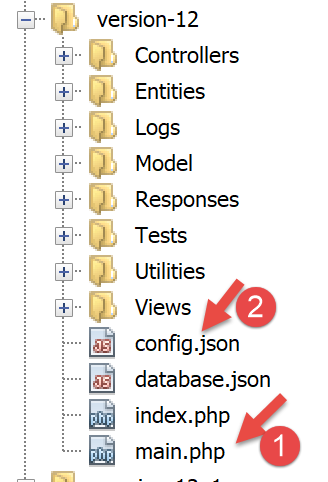
- [1-2]：主控制器 [main.php] [1] 由 [config.json] 文件 [2] 进行配置；
让我们回顾一下主控制器在 MVC 架构中的位置：

在 [1] 中，主控制器 [main.php] 是 MVC 架构中处理客户端请求的第一个组件。它承担着以下几个角色：
- 首先，它执行基本检查：
- 检查配置文件是否存在且有效；
- 加载所有项目依赖项。这相当于加载 MVC 架构中的所有组件；
- 是否指定了请求的操作？如果是，该操作是否有效？
- 如果请求的操作有效，则选择 [2a] 将处理该操作的二级控制器，并向其传递所需的信息：HTTP 请求、会话以及应用程序配置；
- 从二级控制器获取 [2c] 响应。根据客户端请求的应用程序类型（JSON、XML、HTML），选择 [3a] 负责向客户端发送响应的响应对象（JsonResponse、XmlResponse、HtmlResponse），并向其传递所需的所有信息（HTTP 请求、会话、应用程序配置、来自二级控制器的响应）；
- 一旦该响应已发送 [3c]，释放处理请求时可能已分配的任何资源；
23.9.2. [main.php] - 1
主控制器 [main.php] 的代码如下：
<?php
// strict adherence to declared types of function parameters
declare (strict_types=1);
// namespace
namespace Application;
// symfony dependencies
use Symfony\Component\HttpFoundation\Request;
use Symfony\Component\HttpFoundation\Response;
use Symfony\Component\HttpFoundation\Session\Session;
// error handling by PHP
//ini_set("display_errors", "0");
error_reporting(E_ALL && !E_WARNING && !E_NOTICE);
// we retrieve the configuration
$configFilename = "config.json";
$fileContents = \file_get_contents($configFilename);
$erreur = FALSE;
// mistake?
if (!$fileContents) {
// we note the error
$état = 131;
$erreur = TRUE;
$message = "Le fichier de configuration [$configFilename] n'existe pas";
}
if (!$erreur) {
// retrieve the JSON code from the configuration file in an associative array
$config = \json_decode($fileContents, true);
// mistake?
if (!$config) {
// we note the error
$erreur = TRUE;
$état = 132;
$message = "Le fichier de configuration [$configFilename] n'a pu être exploité correctement";
}
}
// mistake?
if ($erreur) {
// preparation of JSON server response
// you can't use the configuration file
// symfony dependencies
require_once "C:/myprograms/laragon-lite/www/vendor/autoload.php";
// response preparation
$response = new Response();
$response->headers->set("content-type", "application/json");
$response->setCharset("utf-8");
// status code
$response->setStatusCode(Response::HTTP_INTERNAL_SERVER_ERROR);
// content
$response->setContent(json_encode(["action" => "", "état" => $état, "réponse" => $message], JSON_UNESCAPED_UNICODE));
// shipping
$response->send();
// end
exit;
}
…
注释
- 第 10–12 行：主控制器使用以下 Symfony 对象：
- [Request]：当前正在处理的 HTTP 请求；
- [Session]：Web 应用程序的会话；
- [Response]：发给客户端的 HTTP 响应；
- 第 15 行：在整个开发过程中，此行将保持注释状态：这样 PHP 错误就会包含在发送给客户端的文本流中。如果客户端是浏览器，这将允许用户查看服务器遇到的错误。这有助于调试；
- 第 16 行：报告所有错误（E_ALL），但排除警告（! E_WARNING）和非致命通知（! E_NOTICE）。例如，如果无法打开文件，PHP 会生成 [E_NOTICE] 错误。 如果第 15 行启用了错误显示，文件打开错误将出现在客户端的浏览器中。如果你忘记测试文件打开的结果，这没问题；但如果你计划进行测试，情况就不同了：此时一条 [notice] 行会使服务器对客户端的响应变得杂乱。在开发过程中，第 16 行也应注释掉：你不想遗漏任何错误；
- 第 19 行：读取配置文件；
- 第 22–27 行：如果读取操作失败，则记录错误（第 25 行），将应用程序状态设为 [131]，并准备错误消息；
- 第 30 行：对配置文件中的 JSON 字符串进行解码；
- 第 32–37 行：如果解码失败，则记录错误（第 34 行），将应用程序状态设为 [132]，并准备错误消息；
- 第 40–57 行：若读取配置文件时发生错误，则无法继续执行。此时，我们将为客户端准备一个 JSON 响应：
- 第 44 行：由于未读取配置文件，因此必须手动导入 [Symfony] 所需的 [autoload] 文件；
- 第 46–47 行：准备 JSON 响应；
- 第 50 行：响应的 HTTP 状态码将设置为 500 INTERNAL_SERVER_ERROR；
- 第 52 行：我们设置响应的 JSON 内容。当前所讨论的 Web 应用程序生成的所有响应都将包含三个键：
- [action]：客户端请求的操作；
- [status]：执行此操作后应用程序的状态；
- [response]：Web 服务器的响应；
- 第 54 行：将 JSON 响应发送给客户端；
23.9.3. [Postman] 测试 - 1
我们将验证当配置文件缺失或错误时服务器的行为：

我们将把 [Postman] 客户端发送给税务服务器的各种请求整理成集合。
- 在 [1] 中，创建一个新的集合；
- 在 [2] 中，为其命名；
- 在 [3] 中，描述为可选；

- 在集合 [4] 中，现在出现了一个名为 [impots-server-tests-version12] [5] 的集合；
- 在 [6] 中，您可以向该集合添加新的请求；

- 在 [7] 中，为查询指定了一个名称；
- 在 [8] 中，描述为可选项；

- 在 [9-11] 中，将请求添加到集合中；
- 在 [12] 中，选择请求类型；此处为 [GET] 请求。在 [19] 中，列出了可用的不同请求类型；
- 在 [13] 中，在此处输入服务器的 URL；
- 在 [14] 中，在此处输入要添加到 URL 中的参数；这些将是 GET 参数。在此处输入而非直接在 URL 中输入的优势在于，[Postman] 会自动对它们进行 URL 编码。若直接在 URL 中输入，则需自行进行 URL 编码；
- 在 [15] 中，[Authorization] 用于定义将要登录的用户。我们无需使用此选项；
- 在 [16] 中，填写将随请求发送的 HTTP 头部。部分头部会自动包含在请求中。您可以在此处添加新的头部；
- 在 [17] 中，[Body] 指的是 [POST] 操作的参数。我们需要使用此选项；
我们将进行以下测试：
- 在 [main.php] 中，我们指定配置文件为 [config2.json]，该文件并不存在：

- 代码第 16 行必须取消注释；
- 第 18 行：关于配置文件名的错误；
现在打开 [Postman] [13, 20]，输入税费计算 Web 服务器的 URL，并执行 [21]：
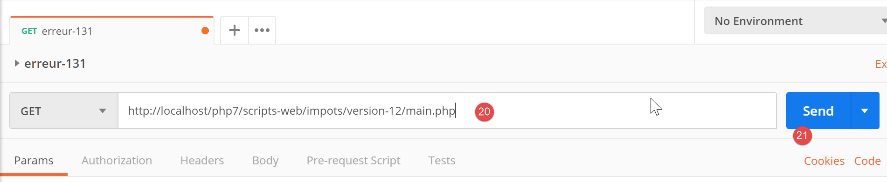
服务器返回的响应（当然，此时必须已运行 Laragon）如下：
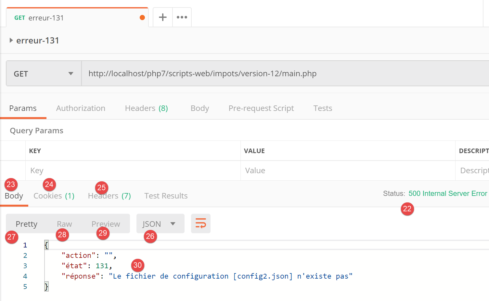
- 在 [22] 中，服务器返回了 HTTP 状态码 [500 内部服务器错误]；
- 在 [23] 中，[Body] 指响应正文，即位于 HTTP 头部 [28] 之后由服务器发送的文档；
- 在 [26] 中，我们可以看到 [Postman] 接收到了一个 JSON 响应；
- 在 [27] 中，格式化的 JSON 响应；
- 在 [28] 中，未格式化的原始 JSON 响应；
- 在 [29] 中，当响应为 HTML 时会使用 [预览] 模式。[预览] 模式随后会显示接收到的页面；
- 在[30]中，显示了来自服务器的 JSON 响应。这确实就是我们所期望的响应；
在 [25] 中，服务器响应中发送的 HTTP 头部如下：

- 在 [32] 中，响应的 JSON 类型；
通过这项初步测试，我们发现：
- 可以向被测服务器发送任何类型的请求；
- 可以设置 GET 或 POST 参数；
- 能够获取完整的响应：包括 HTTP 头部以及紧随其后的文档主体 [Body]；
现在，让我们进行第二次测试：

- 在 [1-3] 中，[config3.json] 文件是一个语法错误的 JSON 文件；
- 在 [4] 中，[main.php] 被配置为使用 [config3.json]；
我们在 [Postman] 中添加一个新请求：

- 在 [1-3] 中，右键单击 [2] 并选择 [复制] 选项以复制请求 [2]；
- 在 [4] 中，新请求有一个默认名称，我们在 [5] 中将其修改；

- 在 [6] 中，已重命名的请求；
- 在 [9-10] 中，我们发送与之前相同的 GET 请求；
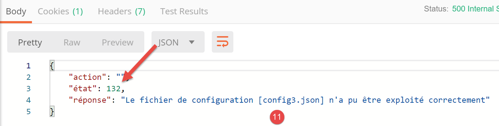
- 在[11]中，服务器的JSON响应；
这里展示了如何测试税费计算 Web 服务的各项操作。
23.9.4. [main.php] – 2
我们继续分析主控制器的代码 [main.php]：
<?php
// strict adherence to declared types of function parameters
declare (strict_types=1);
// namespace
namespace Application;
// symfony dependencies
use Symfony\Component\HttpFoundation\Request;
use Symfony\Component\HttpFoundation\Response;
use Symfony\Component\HttpFoundation\Session\Session;
// error handling by PHP
//ini_set("display_errors", "0");
error_reporting(E_ALL && !E_WARNING && !E_NOTICE);
// we retrieve the configuration
$configFilename = "config.json";
…
// include the necessary script dependencies
$rootDirectory = $config["rootDirectory"];
foreach ($config["relativeDependencies"] as $dependency) {
require_once "$rootDirectory$dependency";
}
// absolute dependencies (third-party libraries)
foreach ($config["absoluteDependencies"] as $dependency) {
require_once "$dependency";
}
// log file creation
try {
$logger = new Logger($config['logsFilename']);
} catch (ExceptionImpots $ex) {
// log file could not be created - internal server error
$état = 133;
(new JsonResponse())->send(
NULL, NULL, $config,
Response::HTTP_INTERNAL_SERVER_ERROR,
["action" => "non déterminée", "état" => $état, "réponse" => "Le fichier de logs [{$config['logsFilename']}] n'a pu être créé"],
[]);
// completed
exit;
}
注释
- 第 18 行：现在我们有一个名为 [config.json] 的配置文件，该文件已存在且语法正确。我们还应验证该文件中是否包含预期的键。我们假设这是开发者常规调试流程的一部分。我们本可以将同样的推理应用到前两个错误上；
- 第 20–28 行：我们引入了 Web 项目所需的所有依赖项。我们已经多次遇到过这段代码；
- 第 31–43 行：我们尝试创建 [Logger] 对象，该对象将允许我们将事件记录到文件 [$config['logsFilename']] 中。此创建操作可能会失败；
- 第 33–43 行：处理创建 [Logger] 对象时的错误；
- 第 35 行：我们设置状态码；
- 第 36–40 行：发送 JSON 响应；
- 第 42 行：我们终止脚本；
发送给客户端的所有响应都实现了以下 [InterfaceResponse] 接口：

[InterfaceResponse] 接口的代码如下：
<?php
namespace Application;
// symfony dependencies
use Symfony\Component\HttpFoundation\Request;
use Symfony\Component\HttpFoundation\Session\Session;
interface InterfaceResponse {
// Request $request : requête en cours de traitement
// Session $session: the web application session
// array $config: application configuration
// int statusCode: HTTP response status code
// array $content: server response
// array $headers: HTTP headers to be added to the response
// Logger $logger: the logger for writing logs
public function send(
Request $request = NULL,
Session $session = NULL,
array $config,
int $statusCode,
array $content,
array $headers,
Logger $logger = NULL): void;
}
- 第 19–27 行：[InterfaceResponse] 接口有一个方法 [send]，用于将响应发送给客户端；
- 第 11–17 行：[send] 方法中各个参数的含义；
- 第 23–25 行：参数 [$statusCode, $content, $headers] 是应用程序二级控制器标准输出的一部分。不过，响应可能需要额外信息。因此，我们通过前三个参数（第 20–22 行）为其提供这些信息，使其能够访问有关请求、会话和配置的所有信息；
- 第 26 行：响应需要 [Logger]，因为它将记录发送给客户端的响应；
[JsonResponse] 类通过以下方式实现了 [InterfaceResponse] 接口：
<?php
namespace Application;
// symfony dependencies
use Symfony\Component\Serializer\Encoder\JsonEncode;
use Symfony\Component\Serializer\Encoder\JsonEncoder;
use Symfony\Component\Serializer\Normalizer\ObjectNormalizer;
use Symfony\Component\Serializer\Serializer;
use \Symfony\Component\HttpFoundation\Request;
use \Symfony\Component\HttpFoundation\Session\Session;
class JsonResponse extends ParentResponse implements InterfaceResponse {
// Request $request : requête en cours de traitement
// Session $session: the web application session
// array $config: application configuration
// int statusCode: HTTP response status code
// array $content: server response
// array $headers: HTTP headers to be added to the response
// Logger $logger: the logger for writing logs
public function send(
Request $request = NULL,
Session $session = NULL,
array $config,
int $statusCode,
array $content,
array $headers,
Logger $logger = NULL): void {
// symfony serializer preparation
$serializer = new Serializer(
[
// required for object serialization
new ObjectNormalizer()],
// encoder jSON
// for options, make OU between the different options
[new JsonEncoder(new JsonEncode([JsonEncode::OPTIONS => JSON_UNESCAPED_UNICODE]))]
);
// serialization jSON
$json = $serializer->serialize($content, 'json');
// headers
$headers = array_merge($headers, ["content-type" => "application/json"]);
// sending reply
parent::sendResponse($statusCode, $json, $headers);
// log
if ($logger !== NULL) {
$logger->write("réponse=$json\n");
}
}
}
评论
- 第 13 行：该类实现了 [InterfaceResponse] 接口；
- 第 13 行：该类继承自 [ParentResponse] 类。所有 [Response] 类型都继承自该类。正是这个父类将响应发送给客户端（第 46 行）。由于这段代码是所有 [Response] 类型共有的，因此被提取到了父类中；
- 第 33–40 行：实例化 [Symfony] 序列化器，它将把服务器响应 [$content] 转换为 JSON 字符串（第 42 行）；
- 第 34–36 行：[Serializer] 构造函数的第一个参数是一个数组。其中放置了对象序列化所需的 [ObjectNormalizer] 类的实例。在本应用中，这涉及一组模拟，其中每个模拟都是 [Simulation] 类的实例；
- 第 39 行：[Serializer] 构造函数的第二个参数也是一个数组：它包含序列化过程中使用的所有编码器（XML、JSON、CSV 等）；
- 第 39 行：此处仅有一个编码器，类型为 [JsonEncoder]。原本使用无参构造函数就已足够。此处向构造函数传递了一个 [JsonEncode] 参数，仅用于传递 JSON 编码选项；
- 第 39 行：[JsonEncode] 构造函数参数是一个选项数组。此处我们使用 [JSON_UNESCAPED_UNICODE] 选项，要求 JSON 字符串中的 UTF-8 字符以原生形式呈现，而非进行“转义”；
- 第 42 行：使用前面的序列化器将 HTTP 响应正文序列化为 JSON；
- 第 44 行：我们添加了告知客户端我们将发送 JSON 的 HTTP 头；
- 第 46 行：请求父类将响应发送给客户端；
- 第 48–50 行：我们记录 JSON 响应；
父类 [ParentResponse] 的代码如下：
<?php
namespace Application;
// symfony dependencies
use Symfony\Component\HttpFoundation\Response;
class ParentResponse {
// int $statusCode: HTTP response status code
// string $content: the body of the response to be sent
// depending on the case, this is a jSON, XML, HTML string
// array $headers: HTTP headers to be added to the response
public function sendResponse(
int $statusCode,
string $content,
array $headers): void {
// preparing the server's text response
$response = new Response();
$response->setCharset("utf-8");
// status code
$response->setStatusCode($statusCode);
// headers
foreach ($headers as $text => $value) {
$response->headers->set($text, $value);
}
// we send the answer
$response->setContent($content);
$response->send();
}
}
注释
- 第 10–13 行：[send] 方法中三个参数的含义；
- 第 17 行：请注意响应正文的类型为 [string]，因此已准备好发送（第 30 行）；
- 第 22 行：响应将包含 UTF-8 字符；
- 第 24 行：响应的 HTTP 状态码；
- 第 26–28 行：添加调用代码提供的 HTTP 头部；
- 第 30–31 行：将响应发送给客户端；
我们已详细说明了 JSON 响应的整个生命周期。后续将不再赘述。您只需记住 [InterfaceResponse] 接口的声明：
interface InterfaceResponse {
// Request $request : requête en cours de traitement
// Session $session: the web application session
// array $config: application configuration
// int statusCode: HTTP response status code
// array $content: server response
// array $headers: HTTP headers to be added to the response
// Logger $logger: the logger for writing logs
public function send(
Request $request = NULL,
Session $session = NULL,
array $config,
int $statusCode,
array $content,
array $headers,
Logger $logger = NULL): void;
}
主控制器 [main.php] 每次请求向客户端发送响应时，都必须遵循此签名。
23.9.5. 测试 [Postman] – 2
我们将 [config.json] 文件修改如下：

- 在 [1] 中，我们指定日志文件为 [Logs]，这是一个文件夹 [2]。因此，创建 [Logs] 文件应会失败；
我们创建一个新的 [Postman] 请求 [3]，命名为 [error-133]：

- [2-4]：我们定义了与前两次测试相同的请求；
- [5-7]：我们成功获取了预期的 JSON 响应；
23.9.6. [main.php] – 3
让我们继续查看主控制器 [main.php]：
<?php
// strict adherence to declared types of function parameters
declare (strict_types=1);
// namespace
namespace Application;
// symfony dependencies
use Symfony\Component\HttpFoundation\Request;
use Symfony\Component\HttpFoundation\Response;
use Symfony\Component\HttpFoundation\Session\Session;
// error handling by PHP
…
// log file creation
…
// 1st log
$logger->write("\n---nouvelle requête\n");
// current query
$request = Request::createFromGlobals();
// session
$session = new Session();
$session->start();
// error list
$erreurs = [];
$erreur = FALSE;
// we manage the requested action
if (!$request->query->has("action")) {
$erreurs[] = "paramètre [action] manquant";
$erreur = TRUE;
$état = 101;
$action = "";
} else {
// memorize the action
$action = strtolower($request->query->get("action"));
}
// we log the action
$logger->write("action [$action] demandée\n");
// does the action exist?
if (!$erreur && !array_key_exists($action, $config["actions"])) {
$erreurs[] = "action [$action] invalide";
$erreur = TRUE;
$état = 102;
}
// the session type must be known before performing certain actions
if (!$erreur && !$session->has("type") && $action !== "init-session") {
$erreurs[] = "pas de session en cours. Commencer par action [init-session]";
$erreur = TRUE;
$état = 103;
}
// some actions require authentication
if (!$erreur && !$session->has("user") && $action !== "authentifier-utilisateur" && $action !== "init-session") {
$erreurs[] = "action demandée par utilisateur non authentifié";
$erreur = TRUE;
$état = 104;
}
// mistakes?
if ($erreurs) {
// we prepare the answer without sending it
$statusCode = Response::HTTP_BAD_REQUEST;
$content = ["réponse" => $erreurs];
$headers = [];
} else {
// ---------------------------
// execute the action using its controller
$controller = __NAMESPACE__ . $config["actions"][$action];
$logger->write("contrôleur : $controller\n");
list($statusCode, $état, $content, $headers) = (new $controller())->execute($config, $request, $session);
}
// --------------------- we send the answer
// cas de l'erreur fatale HTTP_INTERNAL_SERVER_ERROR
// send an e-mail to the administrator if you can
if ($statusCode === Response::HTTP_INTERNAL_SERVER_ERROR && $config['adminMail'] != NULL) {
$infosMail = $config['adminMail'];
$infosMail['message'] = json_encode($content, JSON_UNESCAPED_UNICODE);
$sendAdminMail = new SendAdminMail($infosMail, $logger);
$sendAdminMail->send();
}
// the answer depends on the session type
if ($session->has("type")) {
// the session type is in the session
$type = $session->get("type");
} else {
// if no type in session, then the default response is jSON
$type = "json";
}
// we add the keys [action, state] to the controller response
$content = ["action" => $action, "état" => $état] + $content;
// instantiate the [Response] object responsible for sending the response to the client
$response = __NAMESPACE__ . $config["types"][$type]["response"];
(new $response())->send($request, $session, $config, $statusCode, $content, $headers, $logger);
// the reply has been sent - resources are released
$logger->close();
exit;
注释
- 一旦完成初始检查并确认可以继续，主控制器便专注于处理所请求的操作：它必须满足某些条件；
- 第 21 行：我们记录收到新请求的事实。此前无法执行此操作，因为我们无法确定日志文件是否有效；
- 第 23 行：我们将客户端请求中的所有信息封装到 Symfony [Request] 对象中；
- 第 26 行：我们启动一个新会话，或者如果已有会话则检索现有会话；
- 第 27 行：激活会话；
- 第 29 行：一个错误消息数组；
- 第 30 行：一个布尔值，用于在测试运行时告知是否发生了错误；
- 第 32 行：URL 中必须包含 [action] 参数，格式为 [main.php?action=someAction]。随后，[action] 参数会被纳入 [$request→query] 参数中；
- 第 33–36 行：处理 URL 中缺少 [action] 参数的情况。将错误记录到日志中，并为其分配状态码 [101]；
- 第 39 行：如果 URL 中包含 [action] 参数，则将其存储；
- 第 42 行：记录操作类型；
- 第 45–49 行：若存在 [action] 参数，则必须有效。所有授权操作均定义在关联数组 [$config["actions"]] 中；
- 第 46–48 行：如果操作无效，则记录错误并分配状态码 [102]；
- 第 52–56 行：当前操作为有效操作。但仍需满足其他条件。Web 应用程序提供三种响应类型（JSON、XML、HTML）。该类型由 [init-session] 操作设定。该操作将会话类型存入 [type] 键中；
- 第 52 行：在 [init-session] 操作之外，任何其他操作都必须在会话中包含 [type] 键；
- 第 53–55 行：若不满足此条件，则记录错误并赋予状态 [103]；
- 第 58–63 行：在 [init-session] 和 [authenticate-user] 操作之外，所有其他操作必须在身份验证之后进行。这通过 [authenticate-user] 操作实现，该操作在身份验证成功时，会在会话中添加一个 [user] 键；
- 第 59 行：如果操作既不是 [init-session] 也不是 [authenticate-user]，且会话中不存在 [user] 键，则会发生错误；
- 第 60–62 行：将错误记录到日志中，并赋予状态 [104]；
- 第 66–71 行：检查数组 [$errors] 是否不为空。如果是，则表示请求的操作或其执行上下文有误；
- 第 68–70 行：准备发送给客户端的响应，但暂不发送；
- 第 68 行：HTTP 状态码；
- 第 69 行：响应正文；
- 第 70 行：要添加到响应中的头部；此处无；
- 第 73 行：我们有一个有效的操作。我们将请求其（二级）控制器进行处理；
- 第 74 行：我们构造要执行的控制器类的名称。[__NAMESPACE__] 是当前所在的命名空间，此处为 [Application]（第 7 行）；
- 二级控制器类的名称位于 [config.json] 文件中：
"actions":
{
"init-session": "\\InitSessionController",
"authentifier-utilisateur": "\\AuthentifierUtilisateurController",
"calculer-impot": "\\CalculerImpotController",
"lister-simulations": "\\ListerSimulationsController",
"supprimer-simulation": "\\SupprimerSimulationController",
"fin-session": "\\FinSessionController",
"afficher-calcul-impot": "\\AfficherCalculImpotController"
},
每个操作都对应一个二级控制器。如果操作是 [authenticate-user]，那么第 74 行中的变量 [$controller] 的值将是 [Application/AuthentifierUtilisateurController]；
- 第 75 行：我们记录二级控制器的名称，以便在开发过程中进行验证；
- 第 76 行：执行二级控制器。稍后我们将再次讨论二级控制器；
- 第 76 行：所有二级控制器返回的结果类型均为数组：
- 数组的首个元素 [$statusCode] 是待发送响应的 HTTP 状态码；
- 第二个元素 [$state] 是控制器执行后的应用程序状态；
- 第三个元素 [$content] 是一个关联数组，仅包含一个键 [response]，即要发送给客户端的响应正文；
- 第四个元素 [$headers] 是一个数组，包含要添加到发送给客户端的响应中的 HTTP 头部；
- 第 79 行：我们到达此处：
- 要么是因为发生了错误（第 68–70 行）；
- 或者在执行完控制器之后（第 72–76 行）；
- 无论哪种情况，用于构建客户端响应所需的元素 [$statusCode, $status, $content, $headers] 均已确定；
- 第 82–87 行：处理状态码 [500 Internal Server Error] 的特例。如果控制器设置了此状态码，则表示应用程序无法正常运行。例如，当使用的数据库管理系统（DBMS）尚未启动或不再响应时，税费计算就会出现这种情况。 此时将向应用程序管理员发送一封电子邮件以通知其情况。我们在此不对此代码进行具体说明。[SendAdminMail] 类的用法已在相关章节中介绍（参见链接部分）；
- 第 89–95 行：我们确定 Web 应用程序的类型 [jSON, XML, HTML]。如果 [init-session] 操作执行成功，该类型会存储在与 [type] 键关联的会话中（第 91 行）。如果未成功，则我们为响应任意设置一个类型，即 JSON 类型（第 94 行）；
- 第 97 行：[$content] 是一个数组，包含一个名为 [response] 的键及其对应的值，即要发送给客户端的响应正文。向其中添加了 [action] 和 [status] 两个键。添加 [action] 键是为了便于在 [logs.txt] 文件中追踪日志。而 [status] 键有两个作用：
- 它将使 JSON 和 XML 客户端能够了解已执行的操作将 Web 应用程序置于何种状态；
- 对于 HTML 响应，它将使我们能够选择要发送给客户端浏览器的 HTML 视图；
- 第 99 行：我们选择 [Response] 类类型来执行，以便将响应发送给客户端；
我们在上一节中已经介绍了 [JsonResponse] 类。它实现了 [InterfaceResponse] 接口，并继承了 [ParentResponse] 类。另外两个类 [XmlResponse] 和 [HtmlResponse] 也是如此。
响应类被归类在 [Responses] 文件夹中：

所有这些类都实现了 [InterfaceResponse] 接口，该接口也在链接的章节中进行了介绍：
<?php
namespace Application;
// symfony dependencies
use Symfony\Component\HttpFoundation\Request;
use Symfony\Component\HttpFoundation\Session\Session;
interface InterfaceResponse {
// Request $request : requête en cours de traitement
// Session $session: the web application session
// array $config: application configuration
// int statusCode: HTTP response status code
// array $content: server response
// array $headers: HTTP headers to be added to the response
// Logger $logger: the logger for writing logs
public function send(
Request $request = NULL,
Session $session = NULL,
array $config,
int $statusCode,
array $content,
array $headers,
Logger $logger = NULL): void;
}
该接口仅有一个方法 [send]，负责将响应发送给客户端。该方法包含第 11–17 行中描述的 7 个参数。[Responses] 文件夹中的所有类和接口均位于 [Application] 命名空间下（第 3 行）。
让我们回到 [main.php] 中的代码：
…
// on ajoute les clés [action, état] à la réponse du contrôleur
$content = ["action" => $action, "état" => $état] + $content;
// on instancie l'objet [Response] chargée d'envoyer la réponse au client
$response = __NAMESPACE__ . $config["types"][$type];
(new $response())->send($request, $session, $config, $statusCode, $content, $headers, $logger);
// la réponse a été envoyée - on libère les ressources
$logger->close();
exit;
- 第 5 行：我们实例化了与应用程序类型匹配的 [Response] 类。这些类在 [config.json] 文件中定义如下：
"types": {
"json": "\\JsonResponse",
"html": "\\HtmlResponse",
"xml": "\\XmlResponse"
},
- 第 5 行：类名前缀为其命名空间；
- 第 6 行：实例化 [Response] 类，并调用其 [send] 方法，传入该方法预期的 7 个参数。这些参数来自 [InterfaceResponse] 接口，所有响应类都实现了该接口。这将响应发送给客户端；
- 第 9 行：关闭日志文件；
- 第 10 行：主控制器已完成其工作；
23.9.7. [Postman] 测试 – 3
我们将针对 URL 的 [action] 参数测试各种错误情况。
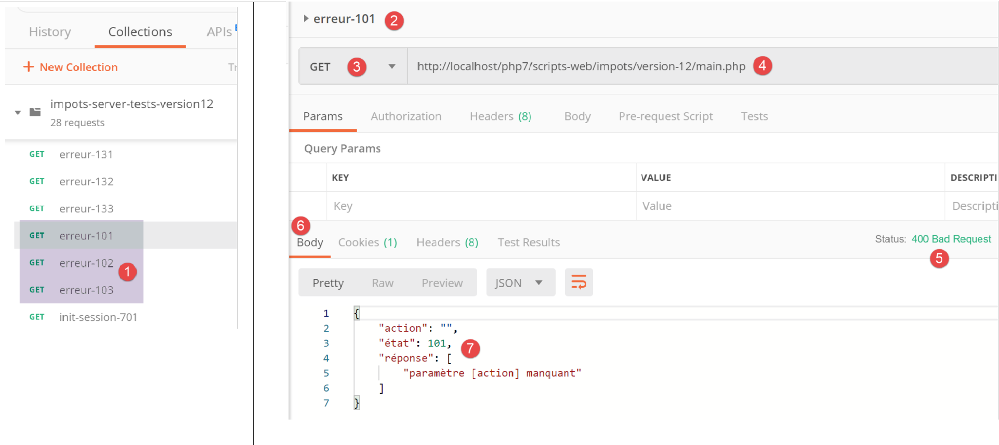
- 在 [1] 中：
- [error-101]：URL 中缺少 [action] 参数的情况；
- [error-102]：URL 中存在 [action] 参数但未被识别的情况；
- [error-103]：URL 中包含 [action] 参数且已被识别，但未定义预期的响应类型 [json, xml, html]；
每个请求均已执行。我们直接呈现结果：
上文：
- 在 [2-4] 中，URL [4] 中不包含 [action] 参数的请求；
- 在 [5-7] 中，JSON 结果；

上图：
- 在 [5-9] 中，包含无效 [action] 参数的请求；
- 在 [10-13] 中，JSON 响应；

上图：
- 在 [14-19] 中，识别出操作但尚未指定类型（json、xml、html）；
- 在 [20-23] 中，服务器的 JSON 响应；
23.10. 辅助控制器
每个操作由 [Controllers] 文件夹中的某个控制器执行：


在上述应用程序的总体架构中，辅助控制器位于 [2a] 目录下。
每个控制器都实现了以下 [InterfaceController] 接口：
<?php
namespace Application;
// symfony dependencies
use Symfony\Component\HttpFoundation\Request;
use Symfony\Component\HttpFoundation\Session\Session;
interface InterfaceController {
// $config is the application configuration
// traitement d'une requête Request
// session and can modify it
// $infos is additional information specific to each controller
// renders an array [$statusCode, $état, $content, $headers]
public function execute(
array $config,
Request $request,
Session $session,
array $infos=NULL): array;
}
注释
- 所有二级控制器都是通过第 17 行中的 [execute] 方法执行的。我们将主控制器中的已知信息传递给该方法：
- 第 18 行：[array $config]，封装了应用程序配置；
- 第 19 行：[Request $request]，即当前正在处理的 HTTP 请求；
- 第 20 行：[Session $session]，即 Web 应用程序的当前会话；
- 第 21 行：[array $infos=NULL]，这是一个额外的信息数组，用于在方法的前三个参数不足时为控制器提供补充信息。在本应用中，该参数从未被使用过。其包含仅作为预防措施；
- 第 21 行：[execute] 方法返回数组 [$statusCode, $status, $content, $headers]
- [int $statusCode]：HTTP 响应状态码；
- [int $state]：执行结束时应用程序的状态；
- [array $content]：一个关联数组 [response=>result]，其中 [result] 可以是任意类型：这是控制器生成的结果，经字符串序列化后将发送给客户端；
- [array $headers]：将包含在服务器 HTTP 响应中的 HTTP 头部列表；
每个二级控制器由主控制器中的以下代码调用：
// on exécute l'action à l'aide de son contrôleur
$controller = __NAMESPACE__ . $config["actions"][$action];
list($statusCode, $état, $content, $headers) = (new $controller())->execute($config, $request, $session);
在第 3 行，我们可以看到 [execute] 方法的第四个参数 [array $infos=NULL] 并未被使用。
23.11. 操作
接下来，我们将回顾 Web 服务可能执行的各种操作：
操作 | 角色 | 执行上下文 |
init-session | 用于设置所需响应的类型（json、xml、html） | GET请求 main.php?action=init-session&type=x 可随时发送 |
authenticate-user | 授权或拒绝用户的登录 | POST 请求 main.php?action=authenticate-user 请求必须包含两个提交参数 [user, password] 仅当已知会话类型（json、xml、html）时才能发出 |
计算税款 | 执行税费计算模拟 | 向 main.php 发送 POST 请求，请求路径为 main.php?action=calculate-tax 请求必须包含三个提交参数 [married, children, salary] 仅当已知会话类型（json、xml、html）且用户已通过身份验证时才能发出 |
list-simulations | 请求查看自会话开始以来已执行的模拟列表 | GET 请求 main.php?action=list-simulations 该请求不接受任何其他参数 只有在已知会话类型（json、xml、html）且用户已通过身份验证的情况下才能发出 |
delete-simulation | 从模拟列表中删除一个模拟 | GET 请求 main.php?action=list-simulations&number=x 该请求不接受任何其他参数 仅在已知会话类型（json、xml、html）且用户已通过身份验证时才能发出 |
end-session | 结束模拟会话。 | 从技术上讲，旧的 Web 会话将被删除，并创建一个新的会话 只有在已知会话类型（json、xml、html）且用户已通过身份验证的情况下才能发出 |
所有二级控制器均按相同方式处理：
- 它们会检查参数。URL中包含的参数位于[Request→query]对象中，而通过POST请求提交的参数则位于[Request→request]对象中；
- 控制器类似于一个检查参数有效性的函数或方法。但对于控制器而言，情况要稍显复杂：
- 预期的参数可能缺失；
- 预期参数均为字符串，而函数可以指定其参数的类型。如果预期参数是数字，则必须验证该参数字符串确实是数字；
- 在验证预期参数存在且语法正确后，还必须验证它们在当前执行上下文中是否有效。该上下文存在于会话中。身份验证示例就是执行上下文的一个例子。某些操作仅应在客户端通过身份验证后才被处理。通常，会话中的某个键会指示身份验证是否已完成；
- 一旦前面的检查完成，二级控制器即可继续处理。这个参数验证过程非常重要。在应用程序生命周期的任何阶段，我们都不能接受客户端向我们发送任意数据。我们必须对应用程序的生命周期保持完全控制；
- 完成工作后，辅助控制器会返回主控制器（即调用它的控制器）所期望的数组 [$statusCode, $state, $content, $headers]；
接下来我们将回顾各个控制器——换言之，即驱动 Web 应用程序生命周期的各种操作。
23.11.1. [init-session] 操作
[init-session] 操作由以下 [InitSessionController] 处理：
<?php
namespace Application;
// symfony dependencies
use Symfony\Component\HttpFoundation\Request;
use Symfony\Component\HttpFoundation\Response;
use Symfony\Component\HttpFoundation\Session\Session;
class InitSessionController implements InterfaceController {
// $config is the application configuration
// traitement d'une requête Request
// session and can modify it
// $infos is additional information specific to each controller
// renders an array [$statusCode, $état, $content, $headers]
public function execute(
array $config,
Request $request,
Session $session,
array $infos = NULL): array {
// you must have a GET and a single parameter other than [action]
$method = strtolower($request->getMethod());
$erreur = $method !== "get" || $request->query->count() != 2;
if ($erreur) {
$état = 701;
$message = "méthode GET exigée avec paramètres [action, type] dans l'URL";
return [Response::HTTP_BAD_REQUEST, $état, ["réponse" => $message], []];
}
// retrieve the GET parameters
$erreur = FALSE;
// type
if (!$request->query->has("type")) {
$erreur = TRUE;
$état = 702;
$message = "paramètre [type] manquant";
} else {
$type = strtolower($request->query->get("type"));
}
// type verification
if (!$erreur && !array_key_exists($type, $config["types"])) {
$erreur = TRUE;
$état = 703;
$message = "paramètre type [$type] invalide";
}
// mistake?
if ($erreur) {
return [Response::HTTP_BAD_REQUEST, $état, ["réponse" => $message], []];
}
// put the session type in the session
$session->set("type", $type);
// message of success
$message = "session démarrée avec type [$type]";
$état = 700;
return [Response::HTTP_OK, $état, ["réponse" => $message], []];
}
}
评论
- 我们预期收到 [GET main.php?action=init-session&type=xxx] 请求
- 第 25-26 行：我们检查请求是否为带有两个 URL 参数的 GET 请求；
- 第 27–31 行：如果不符合此条件，则记录错误并将响应 [$statusCode, $status, $content, $headers] 发送给主控制器；
- 第 35-39 行：我们检查 URL 中是否包含 [type] 参数。如果不包含，则记录错误；
- 第 40 行：记录会话类型；
- 第 43–47 行：检查会话类型是否为指定值之一（json、xml、html）。若非如此，则记录错误；
- 第 49–51 行：若发生错误，则向主控制器发送结果 [$statusCode, $status, $content, $headers]；
- 第 53 行：将会话类型存储在 Web 应用程序会话中；
- 第 55–57 行：控制器已完成工作。向主控制器发送成功响应 [$statusCode, $status, $content, $headers]；
让我们回顾一下主控制器如何处理来自次级控制器的响应：
// erreurs ?
if ($erreurs) {
// on prépare la réponse sans l'envoyer
$statusCode = Response::HTTP_BAD_REQUEST;
$content = ["réponse" => $erreurs];
$headers = [];
} else {
// ---------------------------
// on exécute l'action à l'aide de son contrôleur
$controller = __NAMESPACE__ . $config["actions"][$action];
$logger->write("contrôleur : $controller\n");
list($statusCode, $état, $content, $headers) = (new $controller())->execute($config, $request, $session);
}
// --------------------- on envoie la réponse
// cas de l'erreur fatale HTTP_INTERNAL_SERVER_ERROR
// on envoie un mail à l'administrateur si on peut
if ($statusCode === Response::HTTP_INTERNAL_SERVER_ERROR && $config['adminMail'] != NULL) {
$infosMail = $config['adminMail'];
$infosMail['message'] = json_encode($content, JSON_UNESCAPED_UNICODE);
$sendAdminMail = new SendAdminMail($infosMail, $logger);
$sendAdminMail->send();
}
// la réponse dépend du type de la session
if ($session->has("type")) {
// le type de session est dans la session
$type = $session->get("type");
} else {
// si pas de type dans session, alors par défaut ce sera une réponse en jSON
$type = "json";
}
// on ajoute les clés [action, état] à la réponse du contrôleur
$content = ["action" => $action, "état" => $état] + $content;
// on instancie l'objet [Response] chargée d'envoyer la réponse au client
$response = __NAMESPACE__ . $config["types"][$type]["response"];
(new $response())->send($request, $session, $config, $statusCode, $content, $headers, $logger);
// la réponse a été envoyée - on libère les ressources
$logger->close();
exit;
- 第 12 行：主控制器从辅助控制器中获取结果；
- 第 35-36 行：经过一些检查后，根据当前会话的类型（json、xml、html），通过实例化 [JsonResponse、XmlResponse、HtmlResponse] 中的一个类来发送响应；
接下来，我们将使用 [json] 类型进行 [Postman] 测试，作为模拟会话的一部分。[JsonResponse] 类的功能已在相关章节中介绍。
23.11.2. [Postman] 测试

上文：
- 在 [2] 中，新增了三个测试；
- 在 [3-7] 中，[init-session] 操作缺少 [type] 参数；
- 在 [8-11] 中，服务器的 JSON 响应；

上文：
- 在 [1-7] 中，[init-session] 操作的 [type] 参数不正确；
- 在 [8-11] 中，服务器的 JSON 响应；

上文：
- 在 [1-8] 中，具有 JSON 类型的 [init-session] 操作；
- 在 [9-12] 中，服务器的 JSON 响应；
23.11.3. [authenticate-user] 操作
[authenticate-user] 操作由以下 [AuthentifierUtilisateurController] 控制器执行：
<?php
namespace Application;
// symfony dependencies
use \Symfony\Component\HttpFoundation\Response;
use \Symfony\Component\HttpFoundation\Request;
use \Symfony\Component\HttpFoundation\Session\Session;
class AuthentifierUtilisateurController implements InterfaceController {
// $config is the application configuration
// traitement d'une requête Request
// session and can modify it
// $infos is additional information specific to each controller
// renders an array [$statusCode, $état, $content, $headers]
public function execute(
array $config,
Request $request,
Session $session,
array $infos = NULL): array {
// you must have a POST and a single GET parameter
$method = strtolower($request->getMethod());
$erreur = $method !== "post" || $request->query->count() != 1;
if ($erreur) {
$état = 201;
$message = "méthode POST requise, paramètre [action] dans l'URL, paramètres postés [user,password]";
// return the result to the main controller
return [Response::HTTP_BAD_REQUEST, $état, ["réponse" => $message], []];
}
// retrieve POST parameters
$erreurs = [];
// user
$état = 210;
if (!$request->request->has("user")) {
$état += 2;
$erreurs[] = "paramètre [user] manquant";
} else {
$user = $request->request->get("user");
}
// password
if (!$request->request->has("password")) {
$état += 4;
$erreurs[] = "paramètre [password] manquant";
} else {
$password = trim($request->request->get("password"));
}
// mistake?
if ($erreurs) {
// return the result to the main controller
return [Response::HTTP_BAD_REQUEST, $état, ["réponse" => $erreurs], []];
}
// verification of user credentials
// does the user exist?
$users = $config["users"];
$i = 0;
$trouvé = FALSE;
while (!$trouvé && $i < count($users)) {
$trouvé = ($user === $users[$i]["login"] && $users[$i]["passwd"] === $password);
$i++;
}
// found?
if (!$trouvé) {
// error message
$message = "Echec de l'authentification [$user, $password]";
$état = 221;
// return the result to the main controller
return [Response::HTTP_UNAUTHORIZED, $état, ["réponse" => $message], []];
} else {
// we note in the session that we have authenticated the user
$session->set("user", TRUE);
// message of success
$message = "Authentification réussie [$user, $password]";
$état = 200;
// return the result to the main controller
return [Response::HTTP_OK, $état, ["réponse" => $message], []];
}
}
}
评论
- 我们预期收到一个包含两个参数 [user, password] 的 [POST main.php?action=authentifier-utilisateur] 请求；
- 第 24–25 行：我们验证 URL 中是否包含一个参数的 POST 请求；
- 第 26–31 行：如果出现错误，我们会将其记录并向主控制器返回结果 [$statusCode, $status, $content, $headers]；
- 第 36–39 行：检查提交值中是否包含 [user] 参数。若不存在，则记录错误；
- 第 43–45 行：检查提交数据中是否包含 [password] 参数。若不存在，则记录错误；
- 第 50–53 行：如果提交的值中有任何一个缺失，则向主控制器返回结果 [$statusCode, $status, $content, $headers]；
- 第 56–62 行：检查检索到的 [$user,$password] 配对是否存在于配置文件中的 [$config[‘users’]] 数组中；
- 第 64–69 行：若不满足此条件，则记录错误。将 HTTP 状态码设置为 [Response::HTTP_UNAUTHORIZED]，并将结果 [$statusCode, $status, $content, $headers] 返回给主控制器；
- 第 72 行：认证成功。通过设置 [user] 键在会话中记录此状态。该键的存在表示认证成功；
- 第 73–77 行：将成功结果 [$statusCode, $status, $content, $headers] 返回给主控制器；
23.11.4. [Postman] 测试
我们在 JSON 模式下对 [AuthentifierUtilisateurController] 控制器执行 [Postman] 测试；

上文：
- 在[1-6]中，[authenticate-user]操作使用了GET请求[2]，而实际上需要POST请求；
- 在 [7-10] 中，服务器返回的 JSON 响应；
让我们将 [2] 处的 GET 请求替换为 POST 请求，且不在响应正文 [7] 中包含任何参数：

上文：
- 在 [1-7] 中，[7] 中发送的无参数 POST 请求；
- 在 [8-11] 中，服务器返回的 JSON 响应；
现在，让我们在请求正文中添加一个参数 [password] [4]：

上文：
- 在 [1-6] 中，是一个带有 [password] 参数的 POST 请求 [2]，该参数通过 POST 方式提交 [4-6]。POST 参数必须添加到请求正文中 [4]。向服务器提交值有多种方法。我们选择 [x-www-form-urlencoded] 方法 [5]；
- 在 [8-10] 中，显示来自服务器的 JSON 响应；
现在，让我们定义不包含 [password] 参数的 [user] 参数：

上文：
- 在 [1-7] 中，一个不包含 [password] 参数的 POST 请求 [4-7]；
- 在 [8-11] 中，服务器的 JSON 响应；
现在，让我们设置两个参数 [user, password]，但使用会导致认证失败的值：

上文：
- 在 [1-9] 中，是一个包含错误 [user, password] 参数的 POST 请求；
- 在 [10-13] 中，服务器返回的 JSON 响应。请注意响应中的状态码 [401 未授权] [10]；
现在是一个带有有效凭据的 POST 请求：

上文：
- 在 [1-9] 中，包含有效凭据 [6-9] 的 POST 请求 [2]；
- 在 [10-13] 中，服务器返回的 JSON 响应。请注意 [10] 中的 HTTP 状态码 [200 OK]；
23.11.5. [calculate-tax] 操作
[calculer-impot] 操作由以下 [CalculerImpotController] 控制器处理：
<?php
namespace Application;
// symfony dependencies
use \Symfony\Component\HttpFoundation\Response;
use \Symfony\Component\HttpFoundation\Request;
use \Symfony\Component\HttpFoundation\Session\Session;
// layer alias [dao]
use \Application\ServerDaoWithSession as ServerDaoWithRedis;
class CalculerImpotController implements InterfaceController {
// $config is the application configuration
// traitement d'une requête Request
// session and can modify it
// $infos is additional information specific to each controller
// renders an array [$statusCode, $état, $content, $headers]
public function execute(
array $config,
Request $request,
Session $session,
array $infos = NULL): array {
// you must have one GET parameter and three POST parameters
$method = strtolower($request->getMethod());
$erreur = $method !== "post" || $request->query->count() != 1;
if ($erreur) {
// we note the error
$message = "il faut utiliser la méthode [post] avec [action] dans l'URL et les paramètres postés [marié, enfants, salaire]";
$état = 301;
// return result to main controller
return [Response::HTTP_BAD_REQUEST, $état, ["réponse" => $message], []];
}
// retrieve POST parameters
$erreurs = [];
$état = 310;
// marital status
if (!$request->request->has("marié")) {
$état += 2;
$erreurs[] = "paramètre [marié] manquant";
} else {
$marié = trim(strtolower($request->request->get("marié")));
$erreur = $marié !== "oui" && $marié !== "non";
if ($erreur) {
$état += 4;
$erreurs[] = "valeur [$marié] invalide pour le paramètre [marié]";
}
}
// the number of children
if (!$request->request->has("enfants")) {
$état += 8;
$erreurs[] = "paramètre [enfants] manquant";
} else {
$enfants = trim($request->request->get("enfants"));
$erreur = !preg_match("/^\d+$/", $enfants);
if ($erreur) {
$état += 9;
$erreurs[] = "valeur [$enfants] invalide pour le paramètre [enfants]";
}
}
// we recover the annual salary
if (!$request->request->has("salaire")) {
$erreurs[] = "paramètre [salaire] manquant";
$état += 16;
} else {
$salaire = trim($request->request->get("salaire"));
$erreur = !preg_match("/^\d+$/", $salaire);
if ($erreur) {
$état += 17;
$erreurs[] = "valeur [$salaire] invalide pour le paramètre [salaire]";
}
}
// mistake?
if ($erreurs) {
// return result to main controller
return [Response::HTTP_BAD_REQUEST, $état, ["réponse" => $erreurs], []];
}
// we have everything you need to work
// Redis
\Predis\Autoloader::register();
try {
// customer [predis]
$redis = new \Predis\Client();
// connect to the server to see if it's there
$redis->connect();
} catch (\Predis\Connection\ConnectionException $ex) {
// it didn't go well
// return result with error to main controller
$état = 350;
return [Response::HTTP_INTERNAL_SERVER_ERROR, $état,
["réponse" => "[redis], " . utf8_encode($ex->getMessage())], []];
}
// we have valid parameters
// creation of the [dao] layer
if (!$redis->get("taxAdminData")) {
try {
// retrieve tax data from the database
$dao = new ServerDaoWithRedis($config["databaseFilename"], NULL);
// put the recovered data into redis
$redis->set("taxAdminData", $dao->getTaxAdminData());
} catch (\RuntimeException $ex) {
// it didn't go well
// return result with error to main controller
$état = 340;
return [Response::HTTP_INTERNAL_SERVER_ERROR, $état,
["réponse" => utf8_encode($ex->getMessage())], []];
}
} else {
// tax data are taken from the [application] scope memory
$arrayOfAttributes = \json_decode($redis->get("taxAdminData"), true);
$taxAdminData = (new TaxAdminData())->setFromArrayOfAttributes($arrayOfAttributes);
// istanciation of the [dao] layer
$dao = new ServerDaoWithRedis(NULL, $taxAdminData);
}
// creation of the [business] layer
$métier = new ServerMetier($dao);
// we have everything we need to work - tax calculation
$résultat = $métier->calculerImpot($marié, (int) $enfants, (int) $salaire);
// we add the simulation just run to the session
$simulation = new Simulation();
$résultat = ["marié" => $marié, "enfants" => $enfants, "salaire" => $salaire] + $résultat;
$simulation->setFromArrayOfAttributes($résultat);
// is there a list of in-session simulations?
if (!$session->has("simulations")) {
$simulations = [];
} else {
$simulations = $session->get("simulations");
}
// add simulation to simulation list
$simulations[] = $simulation;
// simulations are put back into session
$session->set("simulations", $simulations);
// return result to main controller
$état = 300;
return [Response::HTTP_OK, $état, ["réponse" => $résultat], []];
}
}
评论
- 预期的请求为 [POST main.php?action=calculate-tax]，包含三个提交的参数 [married, children, salary]：
- [married] 必须为 [yes] 或 [no]；
- [children, salary] 必须是正整数或零；
- 第 26–27 行：我们验证 URL 中是否包含单个参数的 POST 请求；
- 第 28–34 行：如果不符合此条件，则向主控制器发送错误结果；
- 第 36 行：我们将错误信息累积到数组 [$errors] 中；
- 第 39–41 行：检查 [married] 参数是否存在。若不存在，则记录该错误；
- 第 43–49 行：检查 [married] 参数的值是否为 [yes] 或 [no]。若非如此，则记录错误；
- 第 51–54 行：检查 [children] 参数是否存在。若不存在，则记录错误；
- 第 55–61 行：检查 [children] 参数的值是否为正数或零。若不符合，则记录错误；
- 第 63–66 行：检查 [salary] 参数是否存在。如果不存在，则记录错误；
- 第 67–72 行：检查 [salary] 参数的值是否为正数或零。若不符合条件，则记录错误；
- 第 75–78 行：如果 [$errors] 数组不为空，则表示发生了错误。我们将错误数组包含在响应中，并将结果返回给主控制器；
- 第 80 行：参数有效。我们可以计算税额。为此，我们需要构建懂得如何执行此计算的 [dao] 和 [business] 层；
- 第 82–94 行：我们创建一个 [Redis] 客户端；
- 第 88–94 行：如果无法连接到 [Redis] 服务器，则向客户端发送 [500 Internal Server Error] 状态码；
- 第 98 行：检查 [Redis] 服务器是否存在 [taxAdminData] 键。该键代表税务管理数据。若该键不存在，则必须从数据库中检索税务数据；
- 第 101 行：当需要从数据库中检索税务数据时，构建 [dao] 层。[ServerDaoWithRedis] 类已在相关章节中进行过说明；
- 第 103 行：从数据库检索到的数据将以键 [taxAdminData] 存储在 [Redis] 中；
- 第 104–110 行：若数据库查询失败，将记录 [dao] 层返回的错误，并将其包含在发回主控制器的结果中；
- 第 109 行：[PDO] 层返回的错误消息采用 [iso-8859-1] 编码，此处将其转换为 [utf-8] 编码；
- 第 111–117 行：如果 [Redis] 存储中存在 [taxAdminData] 键，则将税务数据直接传递给 [DAO] 层的构造函数；
- 第 119 行：创建 [business] 层。关于 [ServerMetier] 类的描述请参见链接部分；
- 第 124–126 行：利用计算出的税额，创建了一个 [Simulation] 对象。[Simulation] 类封装了模拟的数据，已在链接部分中描述；
- 第 128–132 行：刚构建的模拟必须添加到已计算模拟的列表中。该列表位于会话中，除非尚未进行任何模拟；
- 第 133–136 行：将该模拟添加到模拟列表中，并将该列表返回给会话；
- 第 137–139 行：将结果返回给主控制器；
23.11.6. [Postman] 测试
我们在 JSON 模式下对 [CalculerImpotController] 控制器执行 [Postman] 测试；

上文：
- 在[1-7]中，我们发送的是[GET]请求而非[POST]请求；
- 在 [8-11] 中，服务器返回的 JSON 响应；
现在，让我们使用 [POST] 方法，尝试带或不带提交参数的情况，以及提交无效参数的情况：

上文：
- 我们发起一个 [POST] 请求 [2]，其中包含无效的提交参数 [6-11] [married, children, salary]。您可以通过取消勾选 [16] 中的复选框来省略其中一个参数。这将使您能够测试不同的场景。在上图截图中，这三个参数均存在且全部无效；
- 在 [12-15] 中，显示服务器的 JSON 响应；
现在，让我们取消勾选这三个提交参数中的两个：

上文，
- 在 [5-8] 中，仅提交了 [salary] 参数，而且该参数无效；
- 在[9-11]中，是来自服务器的JSON结果；
现在让我们使用有效的参数进行税费计算：

上文：
- 在 [11-18] 中，包含有效参数 [6-8] 的请求；
- 在 [12-14] 中，服务器的 JSON 响应；
23.11.7. [lister-simulations] 操作
[lister-simulations] 操作由以下二级控制器 [ListerSimulationsController] 处理：
<?php
namespace Application;
// symfony dependencies
use \Symfony\Component\HttpFoundation\Response;
use \Symfony\Component\HttpFoundation\Request;
use \Symfony\Component\HttpFoundation\Session\Session;
class ListerSimulationsController {
// $config is the application configuration
// traitement d'une requête Request
// useful session and can modify it
// $infos is additional information specific to each controller
// renders an array [$statusCode, $état, $content, $headers]
public function execute(
array $config,
Request $request,
Session $session,
array $infos = NULL): array {
// you must have a single parameter GET
$method = strtolower($request->getMethod());
$erreur = $method !== "get" || $request->query->count() != 1;
if ($erreur) {
$état = 501;
$message = "GET requis, avec l'unique paramètre [action] dans l'URL";
// return an error result to the main controller
return [Response::HTTP_BAD_REQUEST, $état, ["réponse" => $message], []];
}
// retrieve the list of simulations in the session
if (!$session->has("simulations")) {
$simulations = [];
} else {
$simulations = $session->get("simulations");
}
// a successful result is returned to the main controller
$état = 500;
return [Response::HTTP_OK, $état, ["réponse" => $simulations], []];
}
}
评论
- request [GET main.php?action=list-simulations];
- 第 24–25 行：我们检查是否收到一个带有单个参数的 GET 请求；
- 第 26–31 行：如果不符合此条件，则向主控制器返回错误结果；
- 第 33-37 行：若会话中存在模拟列表（第 36 行），则从中检索该列表；否则列表为空（第 34 行）；
- 第 39-40 行：将模拟列表返回给主控制器；
23.11.8. 测试 [Postman]
我们将创建两个测试，一个用于错误情况，另一个用于成功情况。
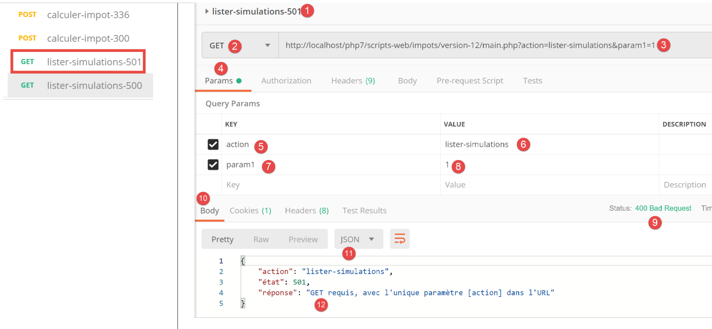
上文：
- 在 [1-8] 中，我们在 URL [3, 7-8] 中添加了一个额外参数 [param1] 并发起 [GET] 请求；
- 在 [9-12] 中，显示了服务器的 JSON 响应；
现在让我们发送一个有效的请求：

上文：
- 在 [1-5] 中，这是一个有效的请求；
该请求的结果如下：

- 在 [3-6] 中，是服务器的 JSON 响应。在此测试之前，已多次运行 [Postman] [calculate-tax-300] 测试，以在服务器的 Web 会话中创建模拟数据；
23.11.9. [delete-simulation] 操作
[delete-simulation] 操作由以下二级控制器 [DeleteSessionController] 处理：
<?php
namespace Application;
// symfony dependencies
use \Symfony\Component\HttpFoundation\Response;
use \Symfony\Component\HttpFoundation\Request;
use \Symfony\Component\HttpFoundation\Session\Session;
class SupprimerSimulationController {
/// $config is the application configuration
// traitement d'une requête Request
// useful session and can modify it
// $infos is additional information specific to each controller
// renders an array [$statusCode, $état, $content, $headers]
public function execute(
array $config,
Request $request,
Session $session,
array $infos = NULL): array {
// you must have two GET parameters
$method = strtolower($request->getMethod());
$erreur = $method !== "get" || $request->query->count() != 2;
$état = 600;
if ($erreur) {
$état += 2;
$message = "GET requis, avec les paramètres [action, numéro]";
}
// parameter [number] must exist
if (!$erreur) {
$état += 4;
$erreur = !$request->query->has("numéro");
if ($erreur) {
$message = "paramètre [numéro] manquant";
}
}
// parameter [number] must be valid
if (!$erreur) {
$état += 8;
$numéro = $request->query->get("numéro");
$erreur = !preg_match("/^\d+$/", $numéro);
if ($erreur) {
$message = "paramètre [$numéro] invalide";
}
}
// parameter [number] must be in the range [0,n-1]
// if n is the number of simulations
if (!$erreur) {
$numéro = (int) $numéro;
$erreur = !$session->has("simulations");
if (!$erreur) {
$simulations = $session->get("simulations");
$erreur = $numéro < 0 || $numéro >= count($simulations);
}
if ($erreur) {
$état += 16;
$message = "la simulation n° [$numéro] n'existe pas";
}
}
// mistake?
if ($erreur) {
// return the result to the main controller
return [Response::HTTP_BAD_REQUEST, $état, ["réponse" => $message], []];
}
// delete the $numéro simulation
unset($simulations[$numéro]);
$simulations = array_values($simulations);
// put the simulations back in the session
$session->set("simulations", $simulations);
// we return the list of simulations to the customer
$état = 600;
return [Response::HTTP_OK, $état, ["réponse" => $simulations], []];
}
}
注释
- request [GET main.php?action=delete-simulation&number=x];
- 第 24–30 行：我们检查是否收到包含两个参数的 GET 请求；
- 第 32–38 行：我们检查 URL 参数中是否存在 [number] 参数；
- 第 40–47 行：我们验证 [number] 参数的值在语法上是否正确；
- 第 50–61 行：验证模拟 #[number] 是否确实存在。有两种错误情况：
- 在会话中找不到该模拟列表（第 52 行）；
- 待删除的模拟编号 [number] 在模拟列表中不存在；
- 第 63–66 行：若发生错误，将向主控制器返回错误结果；
- 第 68 行：删除模拟 #[number]；
- 第 69 行：[unset] 操作不会改变列表中 [0, n-1] 的索引。为更新这些索引，我们从 [$simulations] 数组中检索值以移除缺失的仿真；
- 第 71 行：将新的模拟数组放回会话中；
- 第 73–74 行：将新的模拟列表返回给主控制器；
23.11.10. [Postman] 测试
我们将进行成功和失败测试：

上文：
- 在 [1-6] 中，不带 [number] 参数的 GET 请求；
- 在 [7-10] 中，服务器返回的 JSON 响应；
现在是一个包含语法错误的 number 的请求：

上文：
- 在 [1-5] 中，一个带有无效 [number] 参数 [3, 5] 的 GET 请求；
- 在 [6-9] 中，服务器的 JSON 响应；
现在是一个包含不存在的模拟编号的请求：

上文：
- 在 [1-5] 中，一个模拟编号为 100 的请求，该编号在模拟列表中并不存在；
- 在 [6-9] 中，服务器的 JSON 响应；
现在，我们将从列表中移除模拟 #0，即第一个模拟。首先，让我们使用 [lister-simulations-500] 请求再次获取该列表：

- 在 [1] 中，目前有 2 个模拟；
我们删除第一个模拟（编号 0）：

上图：
- 在 [1-5] 中，我们删除了模拟 #0 [5]；
- 在 [6-9] 中，是服务器的 JSON 响应。我们可以看到模拟 #0 已被移除；
让我们重复此步骤：

上文：
- 在 [1] 中，服务器 Web 会话中已无剩余模拟；
23.11.11. [end-session] 操作
[end-session] 操作由以下二级控制器 [FinSessionController] 处理：
<?php
namespace Application;
// symfony dependencies
use \Symfony\Component\HttpFoundation\Response;
use \Symfony\Component\HttpFoundation\Request;
use \Symfony\Component\HttpFoundation\Session\Session;
class FinSessionController implements InterfaceController {
// $config is the application configuration
// traitement d'une requête Request
// session and can modify it
// $infos is additional information specific to each controller
// renders an array [$statusCode, $état, $content, $headers]
public function execute(
array $config,
Request $request,
Session $session,
array $infos = NULL): array {
// you must have a single parameter GET
$method = strtolower($request->getMethod());
$erreur = $method !== "get" || $request->query->count() != 1;
// mistake?
if ($erreur) {
$état = 401;
// result to main controller
$message = "GET requis avec le seul paramètre [action] dans l'URL";
return [Response::HTTP_BAD_REQUEST, $état, ["réponse" => $message], []];
}
// memorize the session type
$type = $session->get("type");
// the current session is invalidated
$session->invalidate();
// put the type back in the new session
$session->set("type", $type);
// reply sent
$état = 400;
// result to main controller
$content = ["réponse" => "session supprimée"];
return [Response::HTTP_OK, $état, $content, []];
}
}
评论
- 请求 [GET main.php?action=end-session];
- 第 25–33 行：我们验证该操作为带有单个参数 [end-action] 的 GET 请求；
- 第 38 行：注销当前会话。这将删除其中存储的数据并启动一个新会话；
- 第 36 行：在结束会话之前，我们存储其类型 [json, xml, html]；
- 第 40 行：将前一个会话的类型设置到新会话中。最后，我们继续使用一个包含单个键 [type] 的新会话；
- 第 44–45 行：将结果返回给主控制器；
23.11.12. 测试 [Postman]
我们将进行错误测试和成功测试：

上文：
- 在 [1-5] 中，我们使用 POST [2] 请求结束会话 [5]，而非预期的 GET；
- 在 [6-9] 中，服务器返回的 JSON 响应；
现在，来看一个测试成功的示例。首先，让我们查看在上次测试过程中，客户端 [Postman] 与服务器之间交换的会话 Cookie：

上图：
- 在[3]中，客户端[Postman]发送给服务器的会话Cookie；
现在让我们看看服务器在其响应中发送的 HTTP 头部：

上文：
- 在[3-4]中，会话 Cookie 并未出现在服务器的响应中。这是正常的。服务器仅在开始新的 Web 会话时发送一次该 Cookie；
现在让我们执行一个有效的 [logout] 操作：

上文：
- 在 [1-3] 中，一个有效的 [end-session] 操作；
- 在 [4-7] 中，服务器的 JSON 响应；
让我们来看看服务器响应中发送的 HTTP 头部：
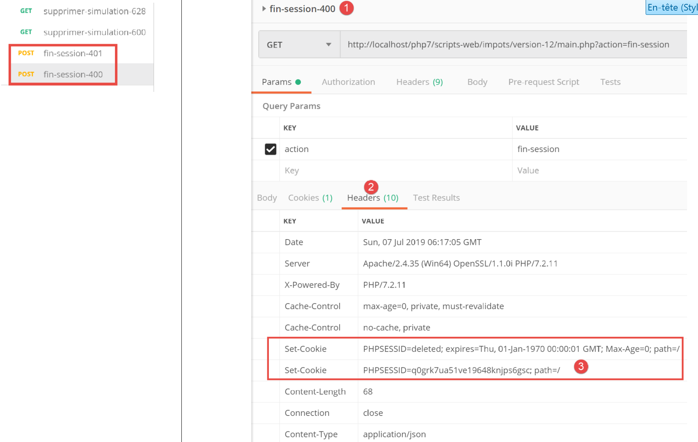
- 在 [3] 中，服务器发送了 [Set-Cookie] 标头，表明一个新的 Web 会话正在开始；
23.12. 服务器响应类型
23.12.1. 简介
让我们重新审视该应用程序的整体架构：

我们将介绍可能的响应类型 [3a]。这些类型归类在项目的 [Responses] 文件夹中：
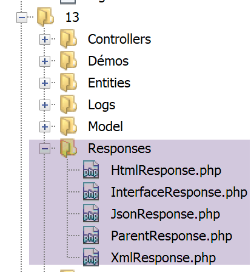
我们在相关章节中已介绍了 [JsonResponse] 类。它实现了 [InterfaceResponse] 接口，并继承了 [ParentResponse] 类。另外两个类 [XmlResponse] 和 [HtmlResponse] 也是如此。
让我们回顾一下 [InterfaceResponse] 接口的定义：
<?php
namespace Application;
// symfony dependencies
use Symfony\Component\HttpFoundation\Request;
use Symfony\Component\HttpFoundation\Session\Session;
interface InterfaceResponse {
// Request $request : requête en cours de traitement
// Session $session: the web application session
// array $config: application configuration
// int statusCode: HTTP response status code
// array $content: server response
// array $headers: HTTP headers to be added to the response
// Logger $logger: the logger for writing logs
public function send(
Request $request = NULL,
Session $session = NULL,
array $config,
int $statusCode,
array $content,
array $headers,
Logger $logger = NULL): void;
}
- 第 19–27 行：[InterfaceResponse] 接口有一个 [send] 方法，用于将响应发送给客户端；
- 第 11–17 行：[send] 方法中各个参数的含义；
- 第 23–25 行：参数 [$statusCode, $content, $headers] 是应用程序二级控制器返回的标准响应。但响应可能需要额外信息。因此，我们通过前三个参数（第 20–22 行）提供这些信息，使其能够访问有关请求、会话和配置的所有信息；
- 第 26 行：响应需要 [Logger]，因为它将记录发送给客户端的响应；
现在让我们回顾一下 [ParentResponse] 类的代码，该类是这三种响应类型的父类，它抽象了它们的共同点：即向客户端实际发送文本响应：
<?php
namespace Application;
// symfony dependencies
use Symfony\Component\HttpFoundation\Response;
class ParentResponse {
// int $statusCode: HTTP response status code
// string $content: the body of the response to be sent
// depending on the case, this is a jSON, XML, HTML string
// array $headers: HTTP headers to be added to the response
public function sendResponse(
int $statusCode,
string $content,
array $headers): void {
// preparing the server's text response
$response = new Response();
$response->setCharset("utf-8");
// status code
$response->setStatusCode($statusCode);
// headers
foreach ($headers as $text => $value) {
$response->headers->set($text, $value);
}
// we send the answer
$response->setContent($content);
$response->send();
}
}
注释
- 第 10–13 行：[send] 方法中三个参数的含义；
- 第 17 行：请注意响应正文的类型为 [string]，因此已准备好发送（第 30 行）；
- 第 22 行：响应将包含 UTF-8 字符；
- 第 24 行：响应的 HTTP 状态码；
- 第 26–28 行：添加调用代码提供的 HTTP 头部；
- 第 30–31 行：将响应发送给客户端；
最后，让我们回顾一下请求将响应发送给客户端的主控制器代码：
// on ajoute les clés [action, état] à la réponse du contrôleur
$content = ["action" => $action, "état" => $état] + $content;
// on instancie l'objet [Response] chargée d'envoyer la réponse au client
$response = __NAMESPACE__ . $config["types"][$type]["response"];
(new $response())->send($request, $session, $config, $statusCode, $content, $headers, $logger);
// la réponse a été envoyée - on libère les ressources
$logger->close();
exit;
- 第 4 行：我们设置要实例化的 [Response] 类的名称；
- 第 5 行：我们实例化该类，并使用 [send($request, $session, $config, $statusCode, $content, $headers, $logger)] 方法将响应发送给客户端。由于它们都实现了相同的 [InterfaceResponse] 接口，因此不同响应类型的 [send] 方法都具有相同的签名；
23.12.2. [JsonResponse] 类
该类已在相关章节中介绍过。不过，我们在此重现其代码，以便更好地突出这三个响应类的一致性：
[JsonResponse] 类通过以下方式实现了 [InterfaceResponse] 接口：
<?php
namespace Application;
// symfony dependencies
use Symfony\Component\Serializer\Encoder\JsonEncode;
use Symfony\Component\Serializer\Encoder\JsonEncoder;
use Symfony\Component\Serializer\Normalizer\ObjectNormalizer;
use Symfony\Component\Serializer\Serializer;
use \Symfony\Component\HttpFoundation\Request;
use \Symfony\Component\HttpFoundation\Session\Session;
class JsonResponse extends ParentResponse implements InterfaceResponse {
// Request $request : requête en cours de traitement
// Session $session: the web application session
// array $config: application configuration
// int statusCode: HTTP response status code
// array $content: server response
// array $headers: HTTP headers to be added to the response
// Logger $logger: the logger for writing logs
public function send(
Request $request = NULL,
Session $session = NULL,
array $config,
int $statusCode,
array $content,
array $headers,
Logger $logger = NULL): void {
// symfony serializer preparation
$serializer = new Serializer(
[
// required for object serialization
new ObjectNormalizer()],
// encoder jSON
// for options, make OU between the different options
[new JsonEncoder(new JsonEncode([JsonEncode::OPTIONS => JSON_UNESCAPED_UNICODE]))]
);
// serialization jSON
$json = $serializer->serialize($content, 'json');
// headers
$headers = array_merge($headers, ["content-type" => "application/json"]);
// sending reply
parent::sendResponse($statusCode, $json, $headers);
// log
if ($logger !== NULL) {
$logger->write("réponse=$json\n");
}
}
}
评论
- 第 13 行：该类实现了 [InterfaceResponse] 接口；
- 第 13 行：该类继承自 [ParentResponse] 类。所有 [Response] 类型都继承自该类。正是这个父类将响应发送给客户端（第 46 行）。由于这段代码是所有 [Response] 类型共有的，因此被提取到了父类中；
- 第 33–40 行：实例化 [Symfony] 序列化器，它将把服务器响应 [$content] 转换为 JSON 字符串（第 42 行）；
- 第 34–36 行：[Serializer] 构造函数的第一个参数是一个数组。其中放置了对象序列化所需的 [ObjectNormalizer] 类的实例。在本应用中，这涉及一组模拟，其中每个模拟都是 [Simulation] 类的实例；
- 第 39 行：[Serializer] 构造函数的第二个参数也是一个数组：我们将序列化过程中使用的所有编码器（XML、JSON、CSV 等）放入其中；
- 第 39 行：此处仅有一个编码器，类型为 [JsonEncoder]。虽然无参构造函数可能已足够，但此处我们向构造函数传递了一个 [JsonEncode] 参数，仅用于传递 JSON 编码选项；
- 第 39 行：[JsonEncode] 构造函数的参数是一个选项数组。此处我们使用 [JSON_UNESCAPED_UNICODE] 选项，要求 JSON 字符串中的 UTF-8 字符以原生形式呈现，而非进行“转义”；
- 第 42 行：使用前面的序列化器将 HTTP 响应正文序列化为 JSON；
- 第 44 行：我们添加了告知客户端我们将发送 JSON 的 HTTP 头；
- 第 46 行：请求父类将响应发送给客户端；
- 第 48–50 行：我们记录 JSON 响应；
23.12.3. [XmlResponse] 类
[XmlResponse] 类如下所示实现了 [InterfaceResponse] 接口：
<?php
namespace Application;
// symfony dependencies
use Symfony\Component\HttpFoundation\Request;
use Symfony\Component\HttpFoundation\Session\Session;
use Symfony\Component\Serializer\Encoder\JsonEncode;
use Symfony\Component\Serializer\Encoder\JsonEncoder;
use Symfony\Component\Serializer\Encoder\XmlEncoder;
use Symfony\Component\Serializer\Normalizer\ObjectNormalizer;
use Symfony\Component\Serializer\Serializer;
class XmlResponse extends ParentResponse implements InterfaceResponse {
// Request $request : requête en cours de traitement
// Session $session: the web application session
// array $config: application configuration
// int statusCode: HTTP response status code
// array $content: server response
// array $headers: HTTP headers to be added to the response
// Logger $logger: the logger for writing logs
public function send(
Request $request = NULL,
Session $session = NULL,
array $config,
int $statusCode,
array $content,
array $headers,
Logger $logger = NULL): void {
// symfony serializer preparation
$serializer = new Serializer(
// required for object serialization
[new ObjectNormalizer()],
[
// serialization XML
new XmlEncoder(
[
XmlEncoder::ROOT_NODE_NAME => 'root',
XmlEncoder::ENCODING => 'utf-8'
]
),
// serialization jSON
new JsonEncoder(new JsonEncode([JsonEncode::OPTIONS => JSON_UNESCAPED_UNICODE]))
]
);
// serialization XML
$xml = $serializer->serialize($content, 'xml');
// headers
$headers = array_merge($headers, ["content-type" => "application/xml"]);
// sending reply
parent::sendResponse($statusCode, $xml, $headers);
// log
if ($logger !== NULL) {
// log in jSON
$log = $serializer->serialize($content, 'json');
$logger->write("réponse=$log\n");
}
}
}
评论
- 第 34–48 行：实例化一个 Symfony 序列化器。构造函数接受两个数组类型的参数；
- 第 36 行：第一个数组包含一个 [ObjectNormalizer] 类型的实例，用于对象序列化；
- 第 37–47 行：第二个数组包含用于序列化的编码器。可以通过同一个序列化器配置多种序列化类型；
- 第 38–44 行：XML 编码器；
- 第 41 行：设置生成的 XML 代码的根节点。其形式为 <root>[其他 XML 标签]</root>；
- 第 42 行：编码将使用 UTF-8 字符；
- 第 46 行：JSON 编码器。该编码器将用于将响应记录到 [logs.txt] 文件中，该文件采用 JSON 格式；
- 第 50 行：发送给客户端的响应正文被序列化为 XML；
- 第 52 行：我们在作为参数接收的头部（第 30 行）中添加了 HTTP 头部，告知客户端我们将发送一个 XML 文档；
- 第 54 行：父类实际将响应发送给客户端；
- 第 56–60 行：响应的 JSON 日志；
23.12.4. 测试 [Postman]
我们已经在 JSON 中进行了所有可能的错误测试。在 XML 中无需进行额外操作。我们展示两个 XML 响应的示例：
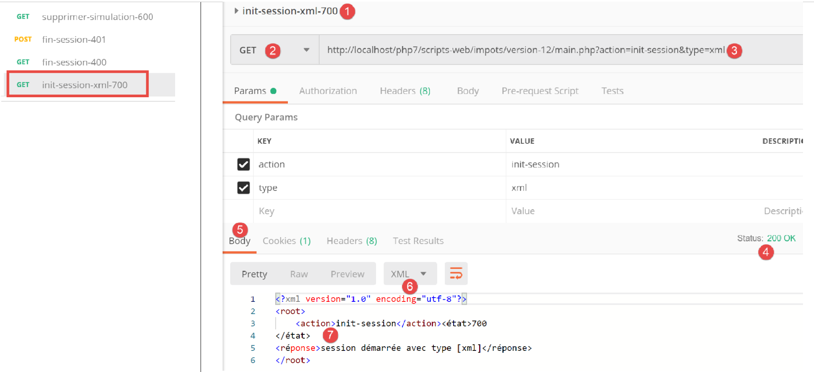
上文：
- [1-3] 中的 XML 会话启动请求；
- 在 [4-7] 中，服务器的 XML 响应；
从现在起，所有服务器响应都将采用 XML 格式。我们可以直接复用 [Postman] 中已使用的所有请求，无需进行任何修改，并且每个请求都会收到相应的 XML 响应。例如，让我们进行一次成功的身份验证：

上文：
- [1-3]中，一个有效的身份验证请求；
- 在 [4-7] 中，是服务器的 XML 响应；
23.12.5. [HtmlResponse]
当会话类型为 [html] 时，将实例化一个 [HtmlResponse] 类型的对象，用于向客户端发送响应。这将向客户端发送一个 HTML 流，该流取决于处理该操作的二级 控制器返回的状态码。此 [status=>view] 映射在 [config.json] 配置文件中定义如下：
"vues": {
"vue-authentification.php": [700, 221, 400],
"vue-calcul-impot.php": [200, 300, 341, 350, 800],
"vue-liste-simulations.php": [500, 600]
},
"vue-erreurs": "vue-erreurs.php"
此配置的含义如下：[‘视图名称’ => ‘与该视图关联的状态’]
- 第 2 行：如果二级控制器返回了数组 [700, 221, 400] 中的某个状态，则必须显示视图 [vue-authentification.php]；
- 第 3 行：如果二级控制器返回数组 [200, 300, 341, 350, 800]，则显示视图 [tax-calculation-view.php]；
- 第 4 行：如果二级控制器返回数组 [500, 600]，则显示视图 [view-simulation-list.php]；
- 第 6 行：如果二级控制器返回的值不在上述任何数组中，则显示视图 [vue-erreurs.php]；
视图位于项目的 [Views] 文件夹中：

[HtmlResponse] 类的代码如下：
<?php
namespace Application;
// symfony dependencies
use Symfony\Component\HttpFoundation\Request;
use Symfony\Component\HttpFoundation\Session\Session;
use Symfony\Component\Serializer\Encoder\JsonEncode;
use Symfony\Component\Serializer\Encoder\JsonEncoder;
use Symfony\Component\Serializer\Normalizer\ObjectNormalizer;
use Symfony\Component\Serializer\Serializer;
class HtmlResponse extends ParentResponse implements InterfaceResponse {
// Request $request : requête en cours de traitement
// Session $session: the web application session
// array $config: application configuration
// int statusCode: HTTP response status code
// array $content: server response
// array $headers: HTTP headers to be added to the response
// Logger $logger: the logger for writing logs
public function send(
Request $request = NULL,
Session $session = NULL,
array $config,
int $statusCode,
array $content,
array $headers,
Logger $logger = NULL): void {
// symfony serializer preparation
$serializer = new Serializer(
[
// for object serialization
new ObjectNormalizer()],
[
// for jSON serialization of the response log
new JsonEncoder(new JsonEncode([JsonEncode::OPTIONS => JSON_UNESCAPED_UNICODE]))
]
);
// the HTML response depends on the status code returned by the controller
$état = $content["état"];
// a view corresponds to a state - look for it in the application configuration
// view list
$vues = array_keys($config["vues"]);
$trouvé = false;
$i = 0;
// browse the list of views
while (!$trouvé && $i < count($vues)) {
// states associated with view n° i
$états = $config["vues"][$vues[$i]];
// is the state you're looking for in the states associated with view n° I?
if (in_array($état, $états)) {
// the view displayed will be view n° i
$vueRéponse = $vues[$i];
$trouvé = true;
}
// next view
$i++;
}
// found?
if (!$trouvé) {
// if no view exists for the current state of the application
// render error view
$vueRéponse = $config["vue-erreurs"];
}
// retrieve the HTML view to be displayed in a character string
ob_start();
require __DIR__ . "/../Views/$vueRéponse";
$html = ob_get_clean();
// we indicate in the headers that we're going to send HTML
$headers = array_merge($headers, ["content-type" => "text/html"]);
// the parent class handles the actual sending of the response
parent::sendResponse($statusCode, $html, $headers);
// log in jSON of the response without the HTML
if ($logger !== NULL) {
// log in jSON of the response from the secondary controller that processed the action
$log = $serializer->serialize($content, 'json');
$logger->write("réponse=$log\n");
}
}
}
评论
- 第 32–41 行：我们实例化一个 Symfony 序列化器。这是为了处理该操作的控制器返回的 JSON 日志（第 72–82 行）；
- 第 42–57 行：我们根据处理该操作的控制器返回的状态码，在应用程序配置中查找应显示的视图。该状态码存储在 [$content[‘status’]] 中（第 43 行）；
- 第 42–61 行：搜索与该状态对应的视图；
- 第 62–67 行：若未找到视图，则 HTML 应用程序处于异常状态。我们将在后文中更详细地解释异常状态这一概念。在此情况下，将显示错误视图；
- 第 68–70 行：解析所选视图的 PHP 代码，并将结果存储在变量 [$html] 中（第 71 行）；
- 这段代码需要稍作说明。假设选定的视图是 [vue-authentification.php]，它会显示一个 Web 身份验证表单：
- 第 69 行：[ob_start] 函数启动了文档中所称的输出缓冲区。由 print、require 及类似操作写入的所有内容——这些内容通常会立即发送给客户端——会被放入输出缓冲区（ob=output buffer）中，而不会发送给客户端；
- 第 70 行：加载视图 [authentication-view.php]；这是一个包含 PHP 代码的动态 HTML 视图。随后发生两件事：
- [vue-authentification.php] 视图中的 PHP 代码被加载并解释执行。其结果是一个我们将称之为 [vue-authentification.html] 的视图，该视图仅包含 HTML 代码（可能还包含 CSS 和 JavaScript），但不再包含 PHP 代码；
- 该 HTML 代码通常会被发送给客户端。实际上，PHP 解释器遇到的任何非 PHP 代码的文本都会如此处理。由于启用了输出缓冲，该 HTML 代码会被放入输出缓冲区，而不会被发送给客户端；
- 第 71 行：[ob_get_clean] 函数执行两项操作：
- 它将输出缓冲区的内容放入 [$html] 变量中，即之前存入该缓冲区的 [vue-authentification.html] 页面；
- 清空输出缓冲区。就缓冲区而言，这相当于什么也没发生。此外，客户端仍未收到任何内容；
- 第 70 行：我们当前正在执行位于 [Responses] 文件夹中的 [HtmlResponse] 类。因此，要查找视图，必须向上移动一层 [..]，然后导航至 [Views] 文件夹。 [__DIR__] 是包含当前正在执行的脚本的文件夹的绝对路径；在本例中，该文件夹为 [C:/myprograms/laragon-lite/www/php7/scripts-web/imports/13/Responses]；
- 第 73 行：我们在作为参数接收的 HTTP 头部（第 29 行）中添加一个头部，告知客户端我们将向其发送 HTML；
- 第 75 行：请求父类实际将响应发送给客户端；
- 第 77–81 行：将处理当前操作的二级控制器提供的响应 [$content] 以 JSON 格式记录下来；
23.12.6. 测试 [Postman]
要真正测试该会话的 HTML 模式，我们需要检查所有视图。这部分内容我们稍后再进行。接下来我们将执行以下测试：
让我们看看配置文件中的视图列表：
"vues": {
"vue-authentification.php": [700, 221, 400],
"vue-calcul-impot.php": [200, 300, 341, 350, 800],
"vue-liste-simulations.php": [500, 600]
},
"vue-erreurs": "vue-erreurs.php"
通过检查执行的 [Postman] 测试，我们可以确定生成上述部分状态码的上下文：

我们可以看到，状态码 [700] 对应于成功的 [init-session] 操作 [2]。上文中我们看到的是 JSON 响应，但响应格式也可能是 XML 或 HTML。本次测试将针对后者进行。根据配置文件，[vue-authentification.php] 视图构成了 HTML 响应。让我们来验证一下。

上文：
- 在 [1-3] 中，我们初始化了一个 HTML 会话。因此，我们预期会收到 HTML 响应；
- 在 [4-8] 中，显示来自服务器的 HTML 响应；
- 标签页 [8] 提供了接收到的 HTML 代码预览；

- 在 [8-9] 中，显示 HTML 视图的预览；
23.13. HTML Web 应用程序
23.13.1. 视图概述
该 HTML Web 应用程序将使用四个视图：
身份验证视图：

税费计算视图：

模拟列表视图：

意外错误视图：

我们将逐一介绍这些视图。
23.13.2. 身份验证视图
23.13.2.1. 视图概述
身份验证视图如下：

该视图由两个元素组成，我们将它们称为片段：
- 片段 [1] 由脚本 [v-banner.php] 生成；
- 片段 [2] 由脚本 [v-authentication.php] 生成；
身份验证视图由以下页面 [vue-authentication.php] 生成：
<?php
// page test data
// encapsulate paged data in $page
…
?>
<!doctype html>
<html lang="fr">
<head>
<!-- Required meta tags -->
<meta charset="utf-8">
<meta name="viewport" content="width=device-width, initial-scale=1, shrink-to-fit=no">
<!-- Bootstrap CSS -->
<link rel="stylesheet" href="https://stackpath.bootstrapcdn.com/bootstrap/4.1.3/css/bootstrap.min.css" integrity="sha384-MCw98/SFnGE8fJT3GXwEOngsV7Zt27NXFoaoApmYm81iuXoPkFOJwJ8ERdknLPMO" crossorigin="anonymous">
<title>Application impots</title>
</head>
<body>
<div class="container">
<!-- bandeau sur 1 ligne et 12 colonnes -->
<?php require "v-bandeau.php"; ?>
<!-- formulaire d'authentification sur 9 colonnes -->
<div class="row">
<div class="col-md-9">
<?php require "v-authentification.php" ?>
</div>
</div>
<?php
// if error - displays an error alert
if ($modèle->error) {
print <<<EOT
<div class="row">
<div class="col-md-9">
<div class="alert alert-danger" role="alert">
Les erreurs suivantes se sont produites :
<ul>$modèle->erreurs</ul>
</div>
</div>
</div>
EOT;
}
?>
</div>
</body>
</html>
评论
- 第 7 行：HTML 文档以此行开头；
- 第 8–44 行：HTML 页面被 <html> 和 </html> 标签所包围；
- 第 9–16 行：HTML 文档的头部（head）；
- 第 11 行：<meta charset> 标签表明该文档采用 UTF-8 编码；
- 第 12 行：<meta name='viewport'> 标签设置初始视口显示方式：占据显示屏幕的整个宽度（width），保持初始大小（initial-scale），且不缩放以适应较小的屏幕（shrink-to-fit）；
- 第 14 行：<link rel='stylesheet'> 标签指定了控制视口外观的 CSS 文件。此处我们使用的是 Bootstrap 4.1.3 CSS 框架 [https://getbootstrap.com/docs/4.0/getting-started/introduction/] ；
- 第 15 行：title 标签设置页面标题：

- 第 17–43 行：网页的主体内容被 body 和 /body 标签所包围；
- 第 18–42 行：<div> 标签界定了页面显示区域。视图中使用的 [class] 属性均指向 Bootstrap CSS 框架。<div class=’container’> 标签界定了 Bootstrap 容器；
- 第 20 行：我们引入了脚本 [v-banner.php]。该脚本生成页面的横幅 [1]。我们稍后将对此进行说明；
- 第 22–26 行：<div class=’row’> 标签定义了一个 Bootstrap 行。这些行由 12 个列组成；
- 第 23 行：<div class=’col-md-9’> 标签定义了一个 9 列的区域；
- 第 24 行：我们引入脚本 [v-authentification.php]，该脚本用于显示页面的身份验证表单 [2]。稍后我们将对此进行说明；
- 第 27 行：<?php 标签将 PHP 代码插入到 HTML 页面中。该代码在 HTML 页面渲染之前执行，并可对其进行修改；
- 第 29 行：显示视图中的所有动态数据都将封装在类型为 [stdClass] 的 [$model] 对象中。这是任意选择。我们也可以选择关联数组来实现相同的效果；
- 第 29 行：若用户输入的凭据不正确，认证将失败。此时，认证视图将重新显示并附带一条错误信息。[$model→error] 属性用于指示是否显示该错误信息；
- 第 30–39 行：此语法会输出位于 PHP 符号 <<<EOT（第 30 行——EOT=End Of Text 可以替换为任意文本）与第 39 行 EOT 符号（必须与第 30 行使用的符号完全一致）之间的所有文本。 该符号必须写在第 39 行的第一列。位于两个 EOT 符号之间的文本中的 PHP 变量将被解析；
- 第 33–36 行：定义一个粉色背景的区域（class="alert alert-danger"）（第 33 行）；
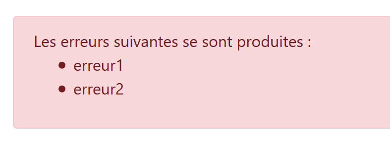
- 第 34 行：文本；
- 第 35 行：HTML 标签 <ul>（无序列表）用于显示带项目符号的列表。每个列表项必须采用 <li>item</li> 的语法；
让我们注意一下此代码中需要定义的动态元素：
- [$model→error]：用于显示错误消息；
- [$template→errors]：错误消息的列表（HTML 意义上的列表）；
23.13.2.2. [v-bandeau.php] 片段
[v-bandeau.php] 片段用于显示 Web 应用程序中所有视图的顶部横幅：

[v-banner.php] 片段的代码如下：
<!-- Bootstrap Jumbotron -->
<div class="jumbotron">
<div class="row">
<div class="col-md-4">
<img src="<?= $logo ?>" alt="Cerisier en fleurs" />
</div>
<div class="col-md-8">
<h1>
Calculez votre impôt
</h1>
</div>
</div>
</div>
评论
- 第 2–13 行：横幅被包裹在一个 Bootstrap Jumbotron 区域 [<div class="jumbotron">] 中。该 Bootstrap 类会以特定方式对显示内容进行样式设置，使其脱颖而出；
- 第 3–12 行：一个 Bootstrap 行；
- 第 4–6 行：在该行的前四列中放置了一张图片 [img]；
- 第 5 行：语法 [<?= $logo ?>] 等同于语法 [<?php print $logo ?>]。换言之，[src] 属性的值将取自 PHP 变量 [$logo] 的值；
- 第 7–11 行：该行剩余的 8 个列（请记住总共有 12 个列）将用于显示文本（第 9 行），并采用大字号（<h1>，第 8–10 行）；
动态元素：
- [$logo]：横幅中显示的图片 URL；
23.13.2.3. [v-authentification.php] 片段
[v-authentication.php] 片段用于显示 Web 应用程序的身份验证表单：
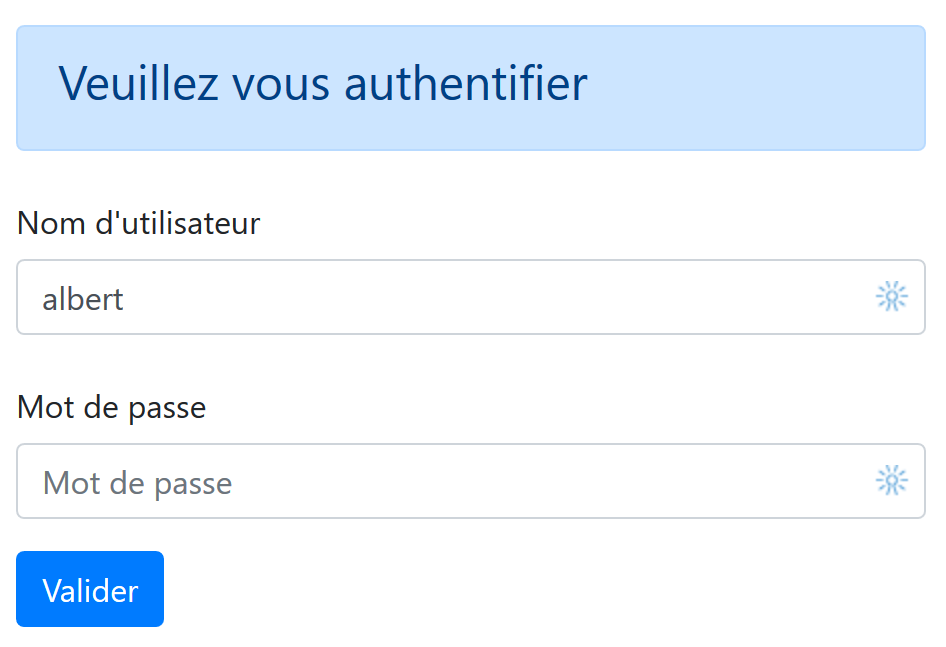
[v-authentication.php] 片段的代码如下：
<!-- form HTML - post its values with the [authenticate-user] action -->
<form method="post" action="main.php?action=authentifier-utilisateur">
<!-- title -->
<div class="alert alert-primary" role="alert">
<h4>Veuillez vous authentifier</h4>
</div>
<!-- bootstrap form -->
<fieldset class="form-group">
<!-- 1st line -->
<div class="form-group row">
<!-- wording -->
<label for="user" class="col-md-3 col-form-label">Nom d'utilisateur</label>
<div class="col-md-4">
<!-- text input field -->
<input type="text" class="form-control" id="user" name="user"
placeholder="Nom d'utilisateur" value="<?= $modèle->login ?>">
</div>
</div>
<!-- 2nd line -->
<div class="form-group row">
<!-- wording -->
<label for="password" class="col-md-3 col-form-label">Mot de passe</label>
<!-- text input field -->
<div class="col-md-4">
<input type="password" class="form-control" id="password" name="password"
placeholder="Mot de passe">
</div>
</div>
<!-- submit] button on a 3rd line-->
<div class="form-group row">
<div class="col-md-2">
<button type="submit" class="btn btn-primary">Valider</button>
</div>
</div>
</fieldset>
</form>
评论
- 第 2–39 行：<form> 标签定义了一个 HTML 表单。该表单通常具有以下特征：
- 它定义了输入字段（第 17 行和第 27 行的 <input> 标签）；
- 它有一个 [submit] 按钮（第 34 行），用于将输入的值发送至 [form] 标签的 [action] 属性中指定的 URL（第 2 行）。向该 URL 发起请求所使用的 HTTP 方法在 [form] 标签的 [method] 属性中指定（第 2 行）；
- 在此，当用户点击 [Submit] 按钮（第 34 行）时，浏览器将通过 POST 方法（第 2 行）将表单中输入的值提交至 URL [main.php?action=authentifier-utilisateur]（第 2 行）；
- 提交的值即用户在第 17 行和第 27 行输入框中输入的内容。这些值将以 [user=xx&password=yy] 的格式提交。参数名称 [user, password] 对应于第 17 行和第 27 行输入框的 [name] 属性；
- 第 5–7 行：一个 Bootstrap 代码块，用于在蓝色背景上显示标题：

- 第 10–37 行：一个 Bootstrap 表单。所有表单元素随后将采用特定样式；
- 第 12–20 行：定义表单的第一行：

- 第 14 行将标签 [1] 设置为三列布局。[label] 标签的 [for] 属性将该标签与第 17 行输入字段的 [id] 属性关联起来；
- 第 15–19 行：将输入字段放置在四列布局中；
- 第 17 行：HTML [input] 标签定义了一个输入框。它具有以下几个属性：
- [type='text']：这是一个文本输入框。您可以在其中输入任意内容；
- [class='form-control']：输入字段的 Bootstrap 样式；
- [id='user']：输入字段的标识符。该标识符通常用于 CSS 和 JavaScript 代码；
- [name='user']: 输入字段的名称。用户输入的值将由浏览器以该名称提交 [user=xx]；
- [placeholder='prompt']: 用户尚未输入任何内容时，输入框中显示的提示文本；

- [value='value']: 输入框出现时（即用户尚未输入任何内容时），会显示文本 'value'。此机制用于在发生错误时显示导致错误的输入内容。此处，该值将取自 PHP 变量 [$model->login]；
- 第 21–30 行：密码输入字段的类似代码；
- 第 27 行：[type='password'] 创建了一个文本输入框（可输入任意内容），但输入的字符会被隐藏：
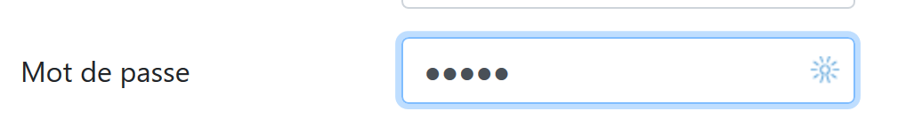
- 第 32–36 行：用于 [Submit] 按钮的第三行代码；
- 第 34 行：由于该按钮具有 [type="submit"] 属性，点击此按钮会触发浏览器将输入的值发送至服务器，如前所述。CSS 属性 [class="btn btn-primary"] 会显示一个蓝色按钮：

还有最后一点需要说明。第 2 行：[action="main.php?action=authentifier-utilisateur"] 属性定义了一个不完整的 URL（它不以 http://machine:port/chemin 开头）。 在本示例中，应用程序的所有 URL 均采用 [http://localhost/php7/scripts-web/impots/version-12/main.php?action=xx] 这种形式。认证视图可通过以下各种 URL 访问：
- [http://localhost/php7/scripts-web/impots/version-12/main.php?action=init-session&type=html];
- [http://localhost/php7/scripts-web/impots/version-12/main.php?action=authentifier-utilisateur]
这些 URL 指向位于 [http://localhost/php7/scripts-web/impots/version-12] 的文档 [main.php]。这适用于该应用程序中的所有 URL。 当提交输入的值时，参数 [action="main.php?action=authentifier-utilisateur"] 将在此路径前添加前缀。因此，这些值将被发布到 URL [http://localhost/php7/scripts-web/impots/version-12/main.php?action=authentifier-utilisateur]。
23.13.2.4. 视觉测试
在将视图集成到应用程序之前，我们可以对其进行充分的测试。此处的目的是测试其视觉效果。我们将把所有测试视图集中到项目的 [Tests] 文件夹中：

要测试视图 [vue-authentification.php]，我们需要创建它将要显示的数据模型：
<?php
// page test data
//
// calculate the view model
$modèle = getModelForThisView();
function getModelForThisView(): object {
// encapsulate paged data in $modèle
$modèle = new \stdClass();
// user code
$modèle->login = "albert";
// error list
$modèle->error = TRUE;
$erreurs = ["erreur1", "erreur2"];
// build a HTML list of errors
$content = "";
foreach ($erreurs as $erreur) {
$content .= "<li>$erreur</li>";
}
$modèle->erreurs = $content;
// banner image
$modèle->logo = "http://localhost/php7/scripts-web/impots/version-12/Tests/logo.jpg";
// we render the model
return $modèle;
}
?>
<!-- document HTML -->
<!doctype html>
<html lang="fr">
<head>
<!-- Required meta tags -->
…
</head>
<body>
….
</body>
</html>
评论
- 第 1–5 行：身份验证视图包含由 [$model] 对象控制的动态部分。该对象被称为视图模型。根据 MVC 缩写词的两种定义之一，这代表了 MVC 中的 M；
- 第 5 行：视图模型由 [getModelForThisView] 函数计算得出；
- 第 9 行：视图模型将被封装在 [stdClass] 类型中；
- 第 10–22 行：为身份验证视图的动态元素定义了测试值；
可在 NetBeans 中进行可视化测试：

我们将持续进行这些可视化测试，直到对结果感到满意为止。
23.13.2.5. 计算视图模型
一旦确定了视图的外观，我们就可以在实际条件下计算视图模型。让我们回顾一下导致此视图的状态代码。这些代码可在配置文件中找到：
"vues": {
"vue-authentification.php": [700, 221, 400],
"vue-calcul-impot.php": [200, 300, 341, 350, 800],
"vue-liste-simulations.php": [500, 600]
},
"vue-erreurs": "vue-erreurs.php"
因此，状态码 [700, 221, 400] 会触发身份验证视图的显示。要理解这些代码的含义，我们可以参考在 JSON 应用程序上执行的 [Postman] 测试：
- [init-session-json-700]：700 是 [init-session] 操作成功后的状态码：此时会显示一个空白的身份验证表单；
- [authenticate-user-221]：221 是 [authenticate-user] 操作失败（凭据不正确）后的状态码：随后将显示身份验证表单，以便用户更正凭据；
- [end-session-400]: 400 是 [end-session] 操作成功后的状态码：随后将显示空的身份验证表单；
既然我们已经知道何时应显示认证表单，就可以在 [authentication-view.php] 中计算其模板：

计算视图模板 [vue-authentification.php] 的代码如下：
<?php
// we inherit the following variables
// Request $request : la requête en cours
// Session $session: the application session
// array $config: application configuration
// array $content: controller response
//
// symfony dependencies
use Symfony\Component\HttpFoundation\Request;
use Symfony\Component\HttpFoundation\Session\Session;
// calculate the view model
$modèle = getModelForThisView($request, $session, $config, $content);
function getModelForThisView(Request $request, Session $session, array $config, array $content): object {
// encapsulate paged data in $modèle
$modèle = new stdClass();
// application status
$état = $content["état"];
// the model depends on the state
switch ($état) {
case 700:
case 400:
// case of empty form display
$modèle->login = "";
// no error to display
$modèle->error = FALSE;
break;
case 221:
// false authentication
// the user initially entered is redisplayed
$modèle->login = $request->request->get("user");
// there is an error to display
$modèle->error = TRUE;
// list HTML of error msg - here only one
$modèle->erreurs = "<li>Echec de l'authentification</li>";
}
// result
return $modèle;
}
?>
<!-- document HTML -->
<!doctype html>
<html lang="fr">
<head>
…
</head>
<body>
…
</body>
</html>
评论
- 第 3–6 行：声明了从 [HtmlResponse] 类继承的变量；该类使用 [require] 来显示 [vue-authentification.php] 视图；
- 第 9–10 行：视图代码中使用的 Symfony 类；
- 第 15–40 行：[getModelForThisView] 函数负责计算视图模型；
- 第 19 行：获取处理当前操作的控制器返回的状态码；
- 第 21–37 行：模型依赖于此状态代码；
- 第 22–28 行：需要显示空白认证表单的情况；
- 第 29–37 行：认证失败的情况：显示用户输入的用户名以及一条错误信息。用户随后可以尝试再次认证；
已为横幅编写了专用模板 [v-bandeau.php]：
<?php
// logo
$scheme = $request->server->get('REQUEST_SCHEME'); // http
$host = $request->server->get('SERVER_NAME'); // localhost
$port = $request->server->get('SERVER_PORT'); // 80
$uri = $request->server->get('REQUEST_URI'); // /php7/scripts-web/impots/version-12/main.php?action=xxx
$champs = [];
preg_match("/(.+)\/.+?$/", $uri, $champs);
$root = $champs[1]; // /php7/scripts-web/impots/version-12
$modèle->logo = "$scheme://$host:$port$root/Views/logo.jpg"; // http://localhost:80/php7/scripts-web/impots/version-12/Views/logo.jpg
?>
<!-- Bootstrap Jumbotron -->
<div class="jumbotron">
<div class="row">
<div class="col-md-4">
<img src="<?= $modèle->logo ?>" alt="Cerisier en fleurs" />
</div>
<div class="col-md-8">
<h1>
Calculez votre impôt
</h1>
</div>
</div>
</div>
评论
- 第 16 行使用了变量 [$template→logo]，该变量是横幅徽标的 URL。与其为应用程序的四个视图分别计算该变量四次，不如将此计算纳入片段 [v-banner.php] 中；
- 第 1–11 行展示了如何利用服务器环境 [$request→server] 中的信息构建 URL [http://localhost:80/php7/scripts-web/impots/version-12/Views/logo.jpg]；
23.13.2.6. 测试 [Postman]
我们已创建了返回状态码 [700, 221, 400] 的请求，这些请求会显示身份验证视图。让我们回顾一下：
- [init-session-html-700]: 700 是 [init-session] 操作成功后的状态码：随后将显示一个空的身份验证表单；
- [authenticate-user-221]: 221 是 [authenticate-user] 操作失败（凭据不正确）后的状态码：随后将显示认证表单以便修正凭据；
- [end-session-400]: 400 是 [end-session] 操作成功后的状态码：随后将显示空的身份验证表单；
只需直接复用这些代码，并检查它们是否正确显示了身份验证视图。此处仅展示两个测试：
- [init-session-html-700]：HTML 会话的开始；

- [authenticate-user-221]：验证用户 [x, x]；

上文：
- 请求发送了字符串 [user=x&password=x]；
- 在 [4] 中，显示了一条错误信息；
- 在[3]中，再次显示了错误的用户；
23.13.2.7. 结论
我们在未编写其他视图的情况下，成功测试了视图 [vue-authentification.php]。这是因为：
- 所有控制器均已编写完成；
- [Postman] 允许我们在无需视图的情况下向服务器发送请求。编写控制器时，必须意识到任何人都可以这样做。因此，必须做好处理那些视图无法允许的请求的准备。这些请求是在 [Postman] 中手动创建的。切勿先入为主地认为“此请求不可能发生”，必须进行验证；
23.13.3. 税费计算视图
23.13.3.1. 视图概述
税费计算视图如下：

该视图包含三个部分：
- 1：顶部横幅由之前介绍过的片段 [v-bandeau.php] 生成；
- 2：由片段 [v-calcul-impot.php] 生成的税费计算表单；
- 3：由片段 [v-menu.php] 生成的包含两个链接的菜单；
税费计算视图由以下脚本 [vue-calcul-impot.php] 生成：

<?php
// we inherit the following variables
// Request $request : la requête en cours
// Session $session: the application session
// array $config: application configuration
// array $content: the response of the controller that processed the action
//
// symfony dependencies
use Symfony\Component\HttpFoundation\Request;
use Symfony\Component\HttpFoundation\Session\Session;
// calculate the view model
$modèle = getModelForThisView($request, $session, $config, $content);
function getModelForThisView(Request $request, Session $session, array $config, array $content): object {
// encapsulate paged data in $modèle
$modèle = new \stdClass();
…
// we render the model
return $modèle;
}
?>
<!-- document HTML -->
<!doctype html>
<html lang="fr">
<head>
<!-- Required meta tags -->
<meta charset="utf-8">
<meta name="viewport" content="width=device-width, initial-scale=1, shrink-to-fit=no">
<!-- Bootstrap CSS -->
<link rel="stylesheet" href="https://stackpath.bootstrapcdn.com/bootstrap/4.1.3/css/bootstrap.min.css" integrity="sha384-MCw98/SFnGE8fJT3GXwEOngsV7Zt27NXFoaoApmYm81iuXoPkFOJwJ8ERdknLPMO" crossorigin="anonymous">
<title>Application impots</title>
</head>
<body>
<div class="container">
<!-- bandeau -->
<?php require "v-bandeau.php"; ?>
<!-- ligne à deux colonnes -->
<div class="row">
<!-- le menu -->
<div class="col-md-3">
<?php require "v-menu.php" ?>
</div>
<!-- le formulaire de calcul -->
<div class="col-md-9">
<?php require "v-calcul-impot.php" ?>
</div>
</div>
<!-- cas du succès -->
<?php
if ($modèle->success) {
// a success alert is displayed
print <<<EOT1
<div class="row">
<div class="col-md-3">
</div>
<div class="col-md-9">
<div class="alert alert-success" role="alert">
$modèle->impôt</br>
$modèle->décôte</br>\n
$modèle->réduction</br>\n
$modèle->surcôte</br>\n
$modèle->taux</br>\n
</div>
</div>
</div>
EOT1;
}
?>
<?php
if ($modèle->error) {
// 9-column error list
print <<<EOT2
<div class="row">
<div class="col-md-3">
</div>
<div class="col-md-9">
<div class="alert alert-danger" role="alert">
L'erreur suivante s'est produite :
<ul>$modèle->erreurs</ul>
</div>
</div>
</div>
EOT2;
}
?>
</div>
</body>
</html>
评论
- 我们仅对尚未出现的新功能进行注释；
- 第 37 行：将视图的顶部横幅包含在视图的第一行 Bootstrap 行中；
- 第 41–43 行：添加菜单，该菜单将占据视图第二行 Bootstrap 布局中的三列；
- 第 45–47 行：插入税费计算表单，该表单将占据视图第二行 Bootstrap 布局中的九个列；
- 第 51–69 行：如果税费计算成功 [$model→success=TRUE]，则税费计算结果将显示在绿色框中（第 59–65 行）。 该框位于视图的第三行 Bootstrap 行（第 54 行），占据九列（第 58 行），位于三个空列（第 55–57 行）的右侧。因此，该框将紧接在税费计算表单下方；
- 第 71–87 行：如果税费计算失败 [$model→error=TRUE]，则在粉色框中显示一条错误消息（第 80–83 行）。 该框架位于视图的第三行 Bootstrap 区域（第 75 行），占据 九列（第 79 行），位于三列空白区域（第 76–78 行）的右侧。因此，该框架将紧接在税费计算表单下方；
23.13.3.2. 片段 [v-calcul-impot.php]
片段 [v-calcul-impot.php] 显示了 Web 应用程序的登录表单：

[v-calcul-impot.php]片段的代码如下：
<!-- form HTML posted -->
<form method="post" action="main.php?action=calculer-impot">
<!-- 12-column message on blue background -->
<div class="col-md-12">
<div class="alert alert-primary" role="alert">
<h4>Remplissez le formulaire ci-dessous puis validez-le</h4>
</div>
</div>
<!-- form elements -->
<fieldset class="form-group">
<!-- first row of 9 columns -->
<div class="row">
<!-- 4-column wording -->
<legend class="col-form-label col-md-4 pt-0">Etes-vous marié(e) ou pacsé(e)?</legend>
<!-- 5-column radio buttons-->
<div class="col-md-5">
<div class="form-check">
<input class="form-check-input" type="radio" name="marié" id="gridRadios1" value="oui" <?= $modèle->checkedOui ?>>
<label class="form-check-label" for="gridRadios1">
Oui
</label>
</div>
<div class="form-check">
<input class="form-check-input" type="radio" name="marié" id="gridRadios2" value="non" <?= $modèle->checkedNon ?>>
<label class="form-check-label" for="gridRadios2">
Non
</label>
</div>
</div>
</div>
<!-- second row of 9 columns -->
<div class="form-group row">
<!-- 4-column wording -->
<label for="enfants" class="col-md-4 col-form-label">Nombre d'enfants à charge</label>
<!-- 5-column numerical entry field for number of children -->
<div class="col-md-5">
<input type="number" min="0" step="1" class="form-control" id="enfants" name="enfants" placeholder="Nombre d'enfants à charge" value="<?= $modèle->enfants ?>">
</div>
</div>
<!-- third row of 9 columns -->
<div class="form-group row">
<!-- 4-column wording -->
<label for="salaire" class="col-md-4 col-form-label">Salaire annuel</label>
<!-- 5-column numeric input field for wages -->
<div class="col-md-5">
<input type="number" min="0" step="1" class="form-control" id="salaire" name="salaire" placeholder="Salaire annuel" aria-describedby="salaireHelp" value="<?= $modèle->salaire ?>">
<small id="salaireHelp" class="form-text text-muted">Arrondissez à l'euro inférieur</small>
</div>
</div>
<!-- fourth row, [submit] button on 5 columns -->
<div class="form-group row">
<div class="col-md-5">
<button type="submit" class="btn btn-primary">Valider</button>
</div>
</div>
</fieldset>
</form>
评论
- 第 2 行：HTML 表单将提交（[method] 属性）至 URL [main.php?action=calculer-impot]（[action] 属性）。提交的值将是表单中输入字段的值：
- 表单中选中单选按钮的值：
- 若选中了 [Oui] 单选按钮，则为 [marié=oui]（第 16–22 行）。其中 [marié] 是第 18 行 [name] 属性的值，[oui] 是第 18 行 [value] 属性的值；
- 若选中 [No] 单选按钮，则为 [married=no]（第 23–28 行）。其中 [married] 是第 24 行 [name] 属性的值，[no] 是第 24 行 [value] 属性的值；
- 第 37 行数字输入字段的值，形式为 [children=xx]，其中 [children] 是第 37 行 [name] 属性的值，[xx] 是用户通过键盘输入的值；
- 第46行数字输入字段的值，形式为 [salary=xx]，其中 [salary] 是第46行 [name] 属性的值，[xx] 是用户通过键盘输入的值；
- 表单中选中单选按钮的值：
最后，提交的值将呈现为 [married=xx&children=yy&salary=zz] 的形式。
- 当用户点击第53行的[提交]按钮时，将提交所输入的值；
- 第16–30行：两个单选按钮：

这两个单选按钮属于同一个单选按钮组，因为它们具有相同的 [name] 属性（第 18、24 行）。浏览器确保在单选按钮组内，任何时候都只能选中一个。因此，点击其中一个会取消之前选中的那个；
- 这些是单选按钮，是因为它们具有 [type="radio"] 属性（第 18、24 行）；
- 在表单显示时（输入之前），必须选中其中一个单选按钮：要实现这一点，只需在相应的 <input type="radio"> 标签中添加 [checked=’checked’] 属性。这可以通过动态变量来实现：
- 第 18 行中的 [<?= $model->checkedYes ?>]；
- 第 24 行中的 [<?= $model->checkedNo ?>]；
这些变量将成为视图模板的一部分。
- 第 37 行：一个数值输入字段 [type="number"]，最小值为 0 [min="0"]。在现代浏览器中，这意味着用户只能输入 >=0 的数字。在这些现代浏览器中，该输入可通过点击上下滑动的滑块来完成。 第 37 行中的 [step="1"] 属性表示滑块将以 1 为增量进行操作。因此，滑块仅接受从 0 到 n 之间、以 1 为增量的整数值。对于手动输入，这意味着带小数的数字将不被接受；

- 第 37 行：在某些屏幕上，子女输入字段必须预先填入该字段的上次输入内容。为此，我们使用 [value] 属性，该属性用于设置输入字段中显示的值。该值将是动态的，由变量 [$model→children] 生成；
- 第 46 行：关于薪资输入的说明与子女输入部分相同；
- 第 53 行：[submit] 按钮会触发将输入的值通过 POST 方式发送至 URL [main.php?action=calculer-impot]；

23.13.3.3. [v-menu.php] 片段
该片段在税费计算表单左侧显示一个菜单：

该片段的代码如下：
<!-- bootstrap menu -->
<nav class="nav flex-column">
<?php
// affichage d'une liste de liens HTML
foreach($modèle->optionsMenu as $texte=>$url){
print <<<EOT3
<a class="nav-link" href="$url">$texte</a>
EOT3;
}
?>
</nav>
评论
- 第 2–11 行：HTML 标签 [nav] 包裹着 HTML 文档中包含指向其他文档的导航链接的部分；
- 第 7 行：HTML 标签 [a] 引入了一个导航链接：
- [$url]：是用户点击 [$text] 链接时被引导到的 URL。 随后浏览器将执行 [GET $url] 操作。如果 [$url] 是相对 URL，则会在其前添加浏览器地址栏中当前显示的 URL 的根路径。因此，当浏览器的当前 URL 形式为 [http://chemin/main.php?paramètres] 时，要创建链接 [1]，我们应创建如下链接：
- 第 5 行：片段模板 [$modèle→optionsMenu] 将是一个如下形式的数组：
[‘ Liste des simulations’=>’main.php?action=liste-simulations’,
‘ Fin de session’=>’main.php?action=fin-session’]
- 第 2、7 行：CSS 类 [nav, flex-column, nav-link] 是 Bootstrap 类，用于定义菜单的外观；
23.13.3.4. 视觉测试
我们将这些各种元素收集在 [Tests] 文件夹中，并为视图 [view-tax-calculation.php] 创建了一个测试模板：

[view-tax-calculation]视图的数据模型如下：
<?php
// page test data
//
// calculate the view model
$modèle = getModelForThisView();
function getModelForThisView(): object {
// encapsulate paged data in $modèle
$modèle = new \stdClass();
// form
$modèle->checkedOui = "";
$modèle->checkedNon = 'checked="checked"';
$modèle->enfants = 2;
$modèle->salaire = 300000;
// message of success
$modèle->success = TRUE;
$modèle->impôt = "Montant de l'impôt : 1000 euros";
$modèle->décôte = "Décôte : 15 euros";
$modèle->réduction = "Réduction : 20 euros";
$modèle->surcôte = "Surcôte : 0 euros";
$modèle->taux = "Taux d'imposition : 14 %";
// error message
$modèle->error = TRUE;
$erreurs = ["erreur1", "erreur2"];
// build a HTML list of errors
$content = "";
foreach ($erreurs as $erreur) {
$content .= "<li>$erreur</li>";
}
$modèle->erreurs = $content;
// menu
$modèle->optionsMenu = [
'Liste des simulations' => 'main.php?action=liste-simulations',
'Fin de session' => 'main.php?action=fin-session'];
// banner image
$modèle->logo = "http://localhost/php7/scripts-web/impots/version-12/Tests/logo.jpg";
// we render the model
return $modèle;
}
?>
<!-- document HTML -->
<!doctype html>
<html lang="fr">
<head>
…
</head>
<body>
…
</body>
</html>
评论
- 第 7–39 行：我们初始化视图 [vue-calcul-impot.php] 以及组件 [v-calcul-impot.php] 和 [v-menu.php] 中的所有动态部分；
我们测试视图 [vue-calcul-impot.php]：

我们得到以下结果：

我们对该视图进行调整，直到对视觉效果感到满意为止。随后，我们可以将其集成到当前正在开发的 Web 应用程序中。
23.13.3.5. 计算视图模型

一旦确定了视图的外观，我们就可以在实际环境中计算视图模型。让我们回顾一下导致此视图生成的状态代码。这些代码可在配置文件中找到：
"vues": {
"vue-authentification.php": [700, 221, 400],
"vue-calcul-impot.php": [200, 300, 341, 350, 800],
"vue-liste-simulations.php": [500, 600]
},
"vue-erreurs": "vue-erreurs.php"
这些状态码 [200, 300, 341, 350, 800] 会触发身份验证视图的显示。要理解这些代码的含义，我们可以参考在 JSON 应用程序上执行的 [Postman] 测试：
- [authenticate-user-200]：200 是 [authenticate-user] 操作成功后的状态码；随后将显示空白的税费计算表单；
- [calculate-tax-300]：300 是 [calculate-tax] 操作成功后的状态码。随后将显示包含已输入数据和税额的计算表单。用户随后可以进行另一项计算；
- [end-session-400]：400 是 [end-session] 操作成功后的状态码：随后将显示空的身份验证表单；
- 当税费计算有效但因无法连接到 DBMS 而导致错误时，将返回状态码 [341]；
- 状态码 [350] 表示税费计算有效，但因无法连接 [Redis] 服务器而引发错误；
- 状态码 [800] 将在后续内容中介绍。目前我们尚未遇到该情况；
- 此处假设用户使用的是现代浏览器。因此，在当前表单中，无法在输入字段 [children, salary] 中输入负数、非数字字符串或小数。若使用旧版浏览器，则可能出现此类情况。我们将把这些错误视为意外错误，并显示 [vue-erreurs] 视图；
既然已明确税费计算表单的显示条件，我们即可在 [tax-calculation-view.php] 中编写其模板：
<?php
// we inherit the following variables
// Request $request : la requête en cours
// Session $session: the application session
// array $config: application configuration
// array $content: the response of the controller that processed the action
//
// symfony dependencies
use Symfony\Component\HttpFoundation\Request;
use Symfony\Component\HttpFoundation\Session\Session;
// calculate the view model
$modèle = getModelForThisView($request, $session, $config, $content);
function getModelForThisView(Request $request, Session $session, array $config, array $content): object {
// encapsulate paged data in $modèle
$modèle = new \stdClass();
// application status
$état = $content["état"];
// the model depends on the state
switch ($état) {
case 200 :
case 800:
// initial display of an empty form
$modèle->success = FALSE; $modèle->errror = FALSE;
$modèle->checkedNon = 'checked="checked"';
$modèle->checkedOui = "";
$modèle->enfants = "";
$modèle->salaire = "";
break;
case 300:
// successful calculation - result display
$modèle->success = TRUE;
$modèle->error = FALSE;
$modèle->impôt = "Montant de l'impôt : {$content["réponse"]["impôt"]} euros";
$modèle->décôte = "Décôte : {$content["réponse"]["décôte"]} euros";
$modèle->réduction = "Réduction : {$content["réponse"]["réduction"]} euros";
$modèle->surcôte = "Surcôte : {$content["réponse"]["surcôte"]} euros";
$modèle->taux = "Taux d'imposition : " . ($content["réponse"]["taux"] * 100) . " %";
// form restored with values entered
$modèle->checkedOui = $request->request->get("marié") === "oui" ? 'checked="checked"' : "";
$modèle->checkedNon = $request->request->get("marié") === "oui" ? "" : 'checked="checked"';
$modèle->enfants = $request->request->get("enfants");
$modèle->salaire = $request->request->get("salaire");
break;
case 341:
// database HS
case 350:
// redis server HS
// form restored with values entered
$modèle->checkedOui = $request->request->get("marié") === "oui" ? 'checked="checked"' : "";
$modèle->checkedNon = $request->request->get("marié") === "oui" ? "" : 'checked="checked"';
$modèle->enfants = $request->request->get("enfants");
$modèle->salaire = $request->request->get("salaire");
// error
$modèle->success = FALSE;
$modèle->error = TRUE;
$modèle->erreurs = "<li>{$content["réponse"]}</li>";
break;
}
//menu
$modèle->optionsMenu = [
"Liste des simulations" => "main.php?action=lister-simulations",
"Fin de session" => "main.php?action=fin-session"];
// we render the model
return $modèle;
}
?>
<!-- document HTML -->
<!doctype html>
<html lang="fr">
<head>
…
<title>Application impots</title>
</head>
<body>
…
</body>
</html>
评论
- 第 22–30 行：显示一个空表单；
- 第 31–45 行：税费计算成功。再次显示输入的数值和税费金额；
- 第 46–59 行：因 [Redis] 或 [MySQL] 其中一台服务器不可用导致税费计算失败的情况；
- 第 62–64 行：计算两个菜单选项；
23.13.3.6. [Postman] 测试
[calculate-tax-300] 测试返回状态码 300，表示税费计算成功：

- 在 [3] 中，导致结果 [2] 的参数值；
让我们尝试一个错误情况：由于 [Redis] 服务器不可用，导致错误 [350]：

23.13.4. 模拟列表视图
23.13.4.1. 视图概述
显示模拟列表的视图如下：

由脚本 [vue-liste-simulations] 生成的视图包含三个部分：
- 1：顶部横幅由前文已介绍的 [v-bandeau.php] 片段生成；
- 2：由片段 [v-simulation-list.php] 生成的模拟列表；
- 3：由片段 [v-menu.php] 生成的包含两个链接的菜单；
模拟视图由以下脚本 [simulation-list-view.php] 生成：

<?php
// calculate the view model
$modèle = getModelForThisView();
function getModelForThisView(Request $request, Session $session, array $config, array $content): object {
// encapsulate paged data in $modèle
$modèle = new \stdClass();
…
// we render the model
return $modèle;
}
?>
<!-- document HTML -->
<!doctype html>
<html lang="fr">
<head>
<!-- Required meta tags -->
<meta charset="utf-8">
<meta name="viewport" content="width=device-width, initial-scale=1, shrink-to-fit=no">
<!-- Bootstrap CSS -->
<link rel="stylesheet" href="https://stackpath.bootstrapcdn.com/bootstrap/4.1.3/css/bootstrap.min.css" integrity="sha384-MCw98/SFnGE8fJT3GXwEOngsV7Zt27NXFoaoApmYm81iuXoPkFOJwJ8ERdknLPMO" crossorigin="anonymous">
<title>Application impots</title>
</head>
<body>
<div class="container">
<!-- bandeau -->
<?php require "v-bandeau.php"; ?>
<!-- ligne à deux colonnes -->
<div class="row">
<!-- menu sur trois colonnes-->
<div class="col-md-3">
<?php require "v-menu.php" ?>
</div>
<!-- liste des simulations sur 9 colonnes-->
<div class="col-md-9">
<?php require "v-liste-simulations.php" ?>
</div>
</div>
</div>
</body>
</html>
评论
- 第28行：添加应用程序横幅 [1]；
- 第33行：添加菜单[2]。它将以三列形式显示在横幅下方；
- 第37行：插入模拟表格 [3]。它将显示在横幅下方、菜单右侧，呈九列布局；
我们已经对该视图的三个片段中的两个进行了说明：
片段 [v-liste-simulations.php] 如下所示：
<!-- message on blue background -->
<div class="alert alert-primary" role="alert">
<h4>Liste de vos simulations</h4>
</div>
<!-- simulation table -->
<table class="table table-sm table-hover table-striped">
<!-- headers of the six table columns -->
<thead>
<tr>
<th scope="col">#</th>
<th scope="col">Marié</th>
<th scope="col">Nombre d'enfants</th>
<th scope="col">Salaire annuel</th>
<th scope="col">Montant impôt</th>
<th scope="col">Surcôte</th>
<th scope="col">Décôte</th>
<th scope="col">Réduction</th>
<th scope="col">Taux</th>
<th scope="col"></th>
</tr>
</thead>
<!-- table body (data displayed) -->
<tbody>
<?php
$i = 0;
// on affiche chaque simulation en parcourant le tableau des simulations
foreach ($modèle->simulations as $simulation) {
// affichage d'une ligne du tableau avec 6 colonnes - balise <tr>
// colonne 1 : entête ligne (n° simulation) - balise <th scope='row'>
// colonne 2 : valeur paramètre [marié] - balise <td>
// colonne 3 : valeur paramètre [enfants] - balise <td>
// colonne 4 : valeur paramètre [salaire] - balise <td>
// colonne 5 : valeur paramètre [impôt] (de l'impôt) - balise <td>
// colonne 6 : valeur paramètre [surcôte] - balise <td>
// colonne 7 : valeur paramètre [décôte] - balise <td>
// colonne 8 : valeur paramètre [réduction] - balise <td>
// colonne 9 : valeur paramètre [taux] (de l'impôt) - balise <td>
// colonne 10 : lien de suppression de la simulation - balise <td>
print <<<EOT
<tr>
<th scope="row">$i</th>
<td>{$simulation["marié"]}</td>
<td>{$simulation["enfants"]}</td>
<td>{$simulation["salaire"]}</td>
<td>{$simulation["impôt"]}</td>
<td>{$simulation["surcôte"]}</td>
<td>{$simulation["décôte"]}</td>
<td>{$simulation["réduction"]}</td>
<td>{$simulation["taux"]}</td>
<td><a href="main.php?action=supprimer-simulation&numéro=$i">Supprimer</a></td>
</tr>
EOT;
$i++;
}
?>
</tr>
</tbody>
</table>
评论
- 使用 <table> 标签创建了一个 HTML 表格（第 6 行和第 58 行）；
- 表格的列标题被包含在 <thead> 标签（表格标题，第 8 行和第 21 行）中。 <tr> 标签（表格行，第 9 行和第 20 行）定义一行。第 10–15 行：<th> 标签（表格标题）定义列标题。因此共有十个。[scope="col"] 表示该标题适用于列。[scope="row"] 表示该标题适用于行；
- 第 23–57 行：<tbody> 标签包裹表格显示的数据；
- 第 40–51 行：<tr> 标签包裹表格的一行；
- 第 41 行：<th scope=’row’> 标签定义行标题；
- 第 42–50 行：每个 td 标签定义该行的一列；
- 第 27 行：模拟列表位于模型 [$model→simulations] 中，这是一个关联数组；
- 第 50 行：用于删除模拟的链接。该 URL 使用了表格第一列（第 41 行）中显示的编号；
23.13.4.2. 可视化测试
我们将这些不同元素收集在 [Tests] 文件夹中，并为视图创建了一个测试模板 [view-simulation-list.php]：

[simulation-list-view]视图的数据模型如下：
<?php
// calculate the view model
$modèle = getModelForThisView();
function getModelForThisView(): object {
// encapsulate paged data in $modèle
$modèle = new \stdClass();
// put the simulations in the format expected by the page
$modèle->simulations = [
[
"marié" => "oui",
"enfants" => 2,
"salaire" => 60000,
"impôt" => 448,
"décôte" => 100,
"réduction" => 20,
"surcôte" => 0,
"taux" => 0.14
],
[
"marié" => "non",
"enfants" => 2,
"salaire" => 200000,
"impôt" => 25600,
"décôte" => 0,
"réduction" => 0,
"surcôte" => 8400,
"taux" => 0.45
]
];
// menu options
$modèle->optionsMenu = [
"Calcul de l'impôt" => "main.php?action=afficher-calcul-impot",
"Fin de session" => "main.php?action=fin-session"];
// banner image
$modèle->logo = "http://localhost/php7/scripts-web/impots/version-12/Tests/logo.jpg";
// we render the model
return $modèle;
}
?>
<!-- document HTML -->
<!doctype html>
<html lang="fr">
<head>
…
</head>
<body>
…
</body>
</html>
评论
- 第9–30行：HTML表格中显示的模拟数据表；
- 第32–34行：菜单选项表；
让我们显示这个视图：

我们得到以下结果：

我们对该视图进行调整，直到对视觉效果感到满意为止。随后，我们可以将其集成到当前正在开发的 Web 应用程序中。
23.13.4.3. 计算视图模型

一旦确定了视图的外观，我们就可以在实际环境中计算视图模型。让我们回顾一下导致此视图生成的状态代码。这些代码可在配置文件中找到：
"vues": {
"vue-authentification.php": [700, 221, 400],
"vue-calcul-impot.php": [200, 300, 341, 350, 800],
"vue-liste-simulations.php": [500, 600]
},
"vue-erreurs": "vue-erreurs.php"
因此，显示模拟视图的是状态码 [500, 600]。要了解这些代码的含义，我们可以参考在 JSON 应用程序上执行的 [Postman] 测试：
- [list-simulations-500]：500是[list-simulations]操作成功后的状态码：随后将显示用户执行的模拟列表；
- [delete-simulation-600]：600 是 [delete-simulation] 操作成功后的状态码。随后将显示此次删除后生成的新的模拟列表；
既然我们已知模拟列表应在何时显示，便可计算其模板并在 [view-simulation-list.php] 中实现：
<?php
// we inherit the following variables
// Request $request : la requête en cours
// Session $session: the application session
// array $config: application configuration
// array $content: controller response
// no errors possible
// array $content: controller response
//
// symfony dependencies
use Symfony\Component\HttpFoundation\Request;
use Symfony\Component\HttpFoundation\Session\Session;
// calculate the view model
$modèle = getModelForThisView($request, $session, $config, $content);
function getModelForThisView(Request $request, Session $session, array $config, array $content): object {
// encapsulate paged data in $modèle
$modèle = new \stdClass();
// put the simulations in the format expected by the page
// they are found in the response of the controller that executed the action
// as an array of objects of type [Simulation]
$objetsSimulation = $content["réponse"];
// each [Simulation] object will be transformed into an associative array
$modèle->simulations = [];
foreach ($objetsSimulation as $objetSimulation) {
$modèle->simulations[] = [
"marié" => $objetSimulation->getMarié(),
"enfants" => $objetSimulation->getEnfants(),
"salaire" => $objetSimulation->getSalaire(),
"impôt" => $objetSimulation->getImpôt(),
"surcôte" => $objetSimulation->getSurcôte(),
"décôte" => $objetSimulation->getdécôte(),
"réduction" => $objetSimulation->getRéduction(),
"taux" => $objetSimulation->getTaux()
];
}
// menu options
$modèle->optionsMenu = [
"Calcul de l'impôt" => "main.php?action=afficher-calcul-impot",
"Fin de session" => "main.php?action=fin-session"];
// we render the model
return $modèle;
}
?>
<!-- document HTML -->
<!doctype html>
<html lang="fr">
<head>
…
</head>
<body>
…
</body>
</html>
评论
- 第 26–36 行：计算片段 [v-list-simulations.php] 所使用的模板 [$template→simulations]；
- 第 39–41 行：计算片段 [v-menu.php] 所使用的模板 [$template→optionsMenu]；
23.13.4.4. [Postman] 测试
[list-simulations-500] 测试返回状态码 500。这对应于查看模拟的请求：

[delete-simulation-600] 测试返回 600 状态码。这对应于成功删除第 0 号模拟的情况。返回的结果是一个模拟列表，其中缺少一个模拟：

23.13.5. 查看意外错误
在此，我们将意外错误定义为在正常使用 Web 应用程序时不应发生的错误。
让我们以如下定义的 [Postman] 测试 [calculate-tax-3xx] 为例：

- 在 [1-3] 中，一个带有 [calculer-impot] 操作的 POST 请求；
- 在 [4-6] 中：这里我们可以为三个 POST 参数定义任意内容：
- [4]：缺少 [marié] 参数；
- [5-6]：[children, salary] 参数存在但无效；
- 在 [9] 中，这三个错误均以状态码 338 报告；
然而，在 Web 应用程序的 HTML 表单中，这种情况不会发生：
- 所有参数均已存在；
- [married] 参数（其值取自两个单选按钮的 [value] 属性）必须取值为 [yes] 或 [no] 之一；
- 在现代浏览器中，<input type='number' min='0' step='1' …> 属性确保 children 和 salary 的输入值必须是 >=0 的整数；
然而，没有任何机制能阻止用户使用 [Postman] 将上述 [calcul-impot-3xx] 测试请求发送至我们的服务器。我们已看到，我们的 Web 应用程序知道如何正确响应此请求。我们将“意外错误”定义为在 HTML 应用程序上下文中不应发生的错误。如果此类错误发生，很可能有人正在试图“入侵”该应用程序。 出于教学目的，我们决定针对此类情况显示错误页面。实际上，我们也可以直接重新显示之前发送给客户端的页面。实现方法很简单：只需将上次发送的 HTML 响应存储在会话中。一旦发生意外错误，我们就返回该响应。这样，由于显示的页面没有变化，用户会觉得服务器对他们的错误没有做出响应。
23.13.5.1. 查看演示
显示意外错误的视图如下：

由 [vue-erreurs.php] 脚本生成的页面包含三个部分：
- 1：顶部横幅由前文已介绍的 [v-banner.php] 片段生成；
- 2：意外错误；
- 3：由片段 [v-menu.php] 生成的包含三个链接的菜单；
意外错误的视图由以下 [vue-erreurs.php] 脚本生成：

<?php
// calculate the view model
$modèle = getModelForThisView();
function getModelForThisView(): object {
// encapsulate paged data in $modèle
$modèle = new \stdClass();
…
// we return the model
return $modèle;
}
?>
<!-- document HTML -->
<!doctype html>
<html lang="fr">
<head>
<!-- Required meta tags -->
<meta charset="utf-8">
<meta name="viewport" content="width=device-width, initial-scale=1, shrink-to-fit=no">
<!-- Bootstrap CSS -->
<link rel="stylesheet" href="https://stackpath.bootstrapcdn.com/bootstrap/4.1.3/css/bootstrap.min.css" integrity="sha384-MCw98/SFnGE8fJT3GXwEOngsV7Zt27NXFoaoApmYm81iuXoPkFOJwJ8ERdknLPMO" crossorigin="anonymous">
<title>Application impots</title>
</head>
<body>
<div class="container">
<!-- bandeau sur 12 colonnes -->
<?php require "v-bandeau.php"; ?>
<!-- ligne à deux colonnes -->
<div class="row">
<!-- menu sur 3 colonnes-->
<div class="col-md-3">
<?php require "v-menu.php" ?>
</div>
<!-- liste des erreurs -->
<div class="col-md-9">
<?php
print <<<EOT
<div class="alert alert-danger" role="alert">
Les erreurs inattendues suivantes se sont produites :
<ul>$modèle->erreurs</ul>
</div>
EOT;
?>
</div>
</div>
</div>
</body>
</html>
评论
- 第27行：添加应用程序横幅 [1]；
- 第 32 行：添加菜单 [2]。它将以三列形式显示在横幅下方；
- 第 34–44 行：将错误区域以九列形式显示；
- 第 37–44 行：显示意外错误的 [print] 操作；
- 第 38 行：此显示内容将出现在一个粉色背景的 Bootstrap 容器中；
- 第 39 行：介绍性文本；
- 第 40 行：<ul> 标签包裹着一个项目符号列表。该列表由 [$model->errors] 模型提供；
我们已经对该视图的两个片段进行了说明：
23.13.5.2. 视觉测试
我们将这些不同元素收集在 [Tests] 文件夹中，并为视图 [vue-erreurs.php] 创建了一个测试模板：

视图 [vue-erreurs.php] 的数据模型如下：
<?php
// calculate the view model
$modèle = getModelForThisView();
function getModelForThisView(): object {
// encapsulate paged data in $modèle
$modèle = new \stdClass();
// the table of unexpected errors
$erreurs = ["erreur1", "erreur2"];
// build the HTML list of errors
$modèle->erreurs = "";
foreach ($erreurs as $erreur) {
$modèle->erreurs .= "<li>$erreur</li>";
}
// menu options
$modèle->optionsMenu = [
"Calcul de l'impôt" => "main.php?action=afficher-calcul-impot",
"Liste des simulations" => "main.php?action=lister-simulations",
"Fin de session" => "main.php?action=fin-session",];
// banner image
$modèle->logo = "http://localhost/php7/scripts-web/impots/version-12/Tests/logo.jpg";
// we return the model
return $modèle;
}
?>
<!-- document HTML -->
<!doctype html>
<html lang="fr">
<head>
…
</head>
<body>
…
</body>
</html>
评论
- 第 9–15 行：构建 HTML 错误列表；
- 第 17–20 行：菜单选项数组；
让我们显示这个视图：

我们得到以下结果：

我们对该视图进行调整，直到对视觉效果感到满意为止。随后，我们可以将其集成到当前正在开发的 Web 应用程序中。
23.13.5.3. 计算视图模型

一旦确定了视图的外观，我们就可以在实际条件下计算视图模型。让我们回顾一下导致此视图的状态代码。这些代码可在配置文件中找到：
"vues": {
"vue-authentification.php": [700, 221, 400],
"vue-calcul-impot.php": [200, 300, 341, 350, 800],
"vue-liste-simulations.php": [500, 600]
},
"vue-erreurs": "vue-erreurs.php"
因此，只有第 [2–4] 行中未列出的状态码才会触发意外错误视图的显示。
用于计算视图模板 [vue-erreurs.php] 的代码如下：
<?php
// we inherit the following variables
// Request $request : la requête en cours
// Session $session: the application session
// array $config: application configuration
// array $content: controller response
//
// symfony dependencies
use Symfony\Component\HttpFoundation\Request;
use Symfony\Component\HttpFoundation\Session\Session;
// calculate the view model
$modèle = getModelForThisView($request, $session, $config, $content);
function getModelForThisView(Request $request, Session $session, array $config, array $content): object {
// encapsulate paged data in $modèle
$modèle = new \stdClass();
// recover errors from the controller response
$réponse = $content["réponse"];
if (!is_array($réponse)) {
// a single error message
$erreurs = [$réponse];
} else {
// several error messages
$erreurs = $réponse;
}
// build the HTML list of errors
$modèle->erreurs = "";
foreach ($erreurs as $erreur) {
$modèle->erreurs .= "<li>$erreur</li>";
}
// menu options
$modèle->optionsMenu = [
"Calcul de l'impôt" => "main.php?action=afficher-calcul-impot",
"Liste des simulations" => "main.php?action=lister-simulations",
"Fin de session" => "main.php?action=fin-session",];
// we return the model
return $modèle;
}
?>
<!-- document HTML -->
<!doctype html>
<html lang="fr">
<head>
…
</head>
<body>
…
</body>
</html>
评论
- 第 19–32 行：计算视图 [view-errors.php] 所使用的模板 [$template→errors]；
- 第 34–37 行：计算片段 [v-menu.php] 所使用的模板 [$template→optionsMenu]；
23.13.5.4. 测试 [Postman]
[calculate-tax-3xx] 测试返回状态码 338，这并非预期的状态码。HTML 响应如下：

23.13.6. 应用程序菜单操作的实现
接下来我们将讨论菜单操作的实现。让我们回顾一下之前遇到的链接的含义
查看 | 链接 | 目标 | 角色 |
税款计算 | [模拟列表] | [main.php?action=list-simulations] | 请求模拟列表 |
[结束会话] | |||
模拟列表 | [税款计算] | [main.php?action=display-tax-calculation] | 显示税费计算视图 |
[注销] | |||
意外错误 | [税费计算] | [main.php?action=display-tax-calculation] | 显示税费计算视图 |
[模拟列表] | |||
[结束会话] |
需要注意的是，点击链接会向链接的目标发起一个 GET 请求。操作 [lister-simulations、fin-session] 是通过 GET 操作实现的，因此我们可以将其用作链接目标。当操作通过 POST 请求执行时，除非结合 JavaScript 使用，否则无法再使用链接。
从上述操作来看，[display-tax-calculation] 操作似乎尚未实现。这属于两个视图之间的导航操作：JSON 或 XML 服务器没有理由实现它，因为它们不具备视图的概念。引入这一概念的是 HTML 服务器。
因此，我们需要实现 [display-tax-calculation] 操作。这将使我们能够回顾在服务器内实现操作的流程。
首先，我们需要添加一个新的二级控制器。我们将它命名为 [AfficherCalculImpotController]：

该控制器必须添加到配置文件 [config.json] 中：
{
"databaseFilename": "database.json",
"rootDirectory": "C:/myprograms/laragon-lite/www/php7/scripts-web/impots/version-12",
"relativeDependencies": [
…
"/Controllers/InterfaceController.php",
"/Controllers/InitSessionController.php",
"/Controllers/ListerSimulationsController.php",
"/Controllers/AuthentifierUtilisateurController.php",
"/Controllers/CalculerImpotController.php",
"/Controllers/SupprimerSimulationController.php",
"/Controllers/FinSessionController.php",
"/Controllers/AfficherCalculImpotController.php"
],
"absoluteDependencies": [
"C:/myprograms/laragon-lite/www/vendor/autoload.php",
"C:/myprograms/laragon-lite/www/vendor/predis/predis/autoload.php"
],
…
"actions":
{
"init-session": "\\InitSessionController",
"authentifier-utilisateur": "\\AuthentifierUtilisateurController",
"calculer-impot": "\\CalculerImpotController",
"lister-simulations": "\\ListerSimulationsController",
"supprimer-simulation": "\\SupprimerSimulationController",
"fin-session": "\\FinSessionController",
"afficher-calcul-impot": "\\AfficherCalculImpotController"
},
…
"vues": {
"vue-authentification.php": [700, 221, 400],
"vue-calcul-impot.php": [200, 300, 341, 350, 800],
"vue-liste-simulations.php": [500, 600]
},
"vue-erreurs": "vue-erreurs.php"
}
- 第 15 行：新的控制器；
- 第 30 行：新的操作及其控制器；
- 第 35 行：新控制器将返回状态码 800。切换视图时，不应出现错误；
控制器 [AfficherCalculImpotController.php] 将如下所示：
<?php
namespace Application;
// symfony dependencies
use Symfony\Component\HttpFoundation\Request;
use Symfony\Component\HttpFoundation\Session\Session;
use Symfony\Component\HttpFoundation\Response;
class AfficherCalculImpotController implements InterfaceController {
// $config is the application configuration
// traitement d'une requête Request
// session and can modify it
// $infos is additional information specific to each controller
// renders an array [$statusCode, $état, $content, $headers]
public function execute(
array $config,
Request $request,
Session $session,
array $infos = NULL): array {
// view change - just a status code to set
return [Response::HTTP_OK, 800, ["réponse" => ""], []];
}
}
评论
- 第 10 行：与其他辅助控制器一样，新控制器实现了 [InterfaceController] 接口；
- 视图的更改很容易实现：只需返回与目标视图关联的状态码，如上所示，此处为代码 800；
23.13.7. 实际环境测试
代码已编写完毕，并使用 [Postman] 测试了每个操作。我们仍需在实际场景中测试视图流。我们需要一种初始化 HTML 会话的方法。我们知道需要向服务器发送参数 [action=init-session&type=html]。为避免在浏览器地址栏中手动输入这些参数，我们将 [index.php] 脚本添加到应用程序中：

[index.php]脚本内容如下：
<?php
// redirect to [main.php] in [html] mode
header('Location: main.php?action=init-session&type=html');
- 第 4 行：[header] 是一个 PHP 函数，用于向响应中添加 HTTP 头。 HTTP 头 [Location: main.php?action=init-session&type=html] 指示客户端浏览器重定向到 [Location] 中指定的目标 URL。脚本 [index.php] 是通过 URL [http://localhost/php7/scripts-web/impots/version-12/index.php] 请求的。 当客户端浏览器收到重定向到相对 URL [main.php?action=init-session&type=html] 的指令时，它将请求绝对 URL [http://localhost/php7/scripts-web/impots/version-12/main.php?action=init-session&type=html]，并启动 HTML 会话；
启动 URL 可以简化为 [http://localhost/php7/scripts-web/impots/version-12/]。如果 URL 中未指定页面，则默认使用 [index.html, index.php] 页面。因此，此处将使用 [index.php] 脚本；
让我们开始吧：接下来我们将介绍几个视图序列。
在浏览器中，我们启用开发者工具（Firefox 中按 F12），并请求启动 URL [https://localhost/php7/scripts-web/impots/version-12/]：

- 在 [4] 处，服务器的首次响应是一个 302 重定向：
- 在 [5] 处，向 URL [http://localhost/php7/scripts-web/impots/13/main.php?action=init-session&type=html] 发起了一个新请求；
让我们来仔细看看这个 302 重定向：

- 在 [8] 中，HTTP 状态码 [302] 是一个重定向码：它告知客户端浏览器，所请求的 URL 已移动。新 URL 在 [9] 中指定。浏览器将通过一个新的 GET 请求执行此重定向：

- 在 [12-13] 中，浏览器发出的新请求；
让我们填写收到的表单；

然后我们进行几次模拟：

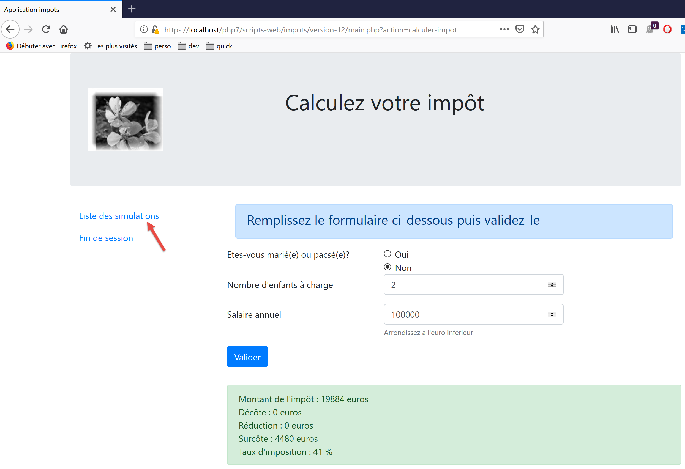
让我们查询模拟列表：
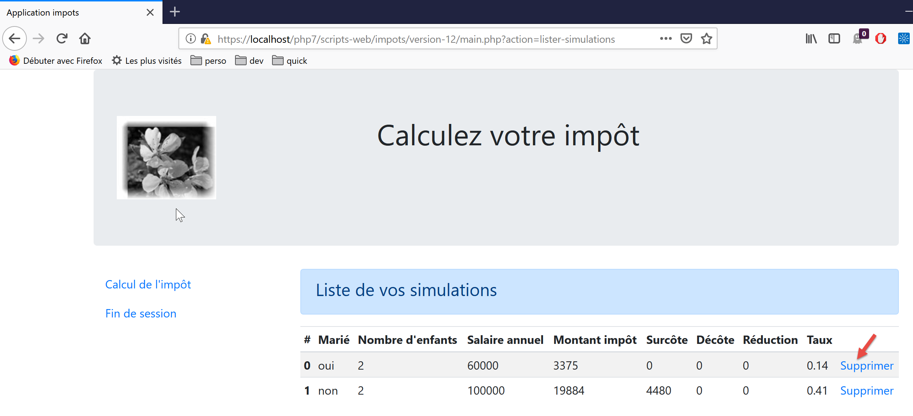
删除第一个模拟：

结束本次会话：

欢迎读者进行进一步测试。
23.14. jSON Web 服务客户端
23.14.1. 客户端/服务器架构

接下来我们将重点探讨 Web 服务 [B] 的 JSON 客户端 [A]。客户端 [A] 与 Web 服务 [B] 一样，具有分层结构：

该架构体现在以下代码组织中：

大多数类已经介绍并说明过了：
链接段落。 | |
链接段落。 | |
链接段落。 | |
段落链接。 | |
段落链接。 | |
段落链接。 |
23.14.2. [dao] 层

23.14.2.1. 接口
[dao]层的接口如下所示 [InterfaceClientDao.php]：
<?php
// namespace
namespace Application;
interface InterfaceClientDao {
// reading taxpayer data
public function getTaxPayersData(string $taxPayersFilename, string $errorsFilename): array;
// calculating a taxpayer's taxes
public function calculerImpot(string $marié, int $enfants, int $salaire): Simulation;
// recording results
public function saveResults(string $resultsFilename, array $simulations): void;
// authentication
public function authentifierUtilisateur(String $user, string $password): void;
// list of simulations
public function listerSimulations(): array;
// delete a simulation
public function supprimerSimulation(int $numéro): array;
// start of session
public function initSession(string $type = 'json'): void;
// end of session
public function finSession(): void;
}
注释
- 第 9 行：[getTaxPayersData] 方法允许您使用包含纳税人数据的 JSON 文件。该方法由 [TraitDao] 特质实现，该特质已在前文讨论过（参见链接段落）；
- 第 15 行：[saveResults] 方法将多个税务计算的结果保存到 JSON 文件中。同样，该方法由已讨论过的 [TraitDao] 特质实现（参见链接段落）；
- 第 12、18、21、27、30 行：针对 Web 服务接受的每个操作，都创建了一个相应的方法；
23.14.2.2. 实现
[InterfaceClientDao] 接口由以下 [ClientDao] 类实现：
<?php
namespace Application;
// dependencies
use Symfony\Component\HttpClient\HttpClient;
use Symfony\Component\HttpClient\Response\CurlResponse;
class ClientDao implements InterfaceClientDao {
// using a Trait
use TraitDao;
// attributes
private $urlServer;
private $sessionCookie;
private $verbose;
// manufacturer
public function __construct(string $urlServer, bool $verbose = TRUE) {
$this->urlServer = $urlServer;
$this->verbose = $verbose;
}
…
}
评论
- 第 18–21 行：构造函数接收两个参数：
- JSON Web 服务的 URL [$urlServer]；
- 一个布尔值 [$verbose]，当设置为 TRUE 时，表示该类应在控制台上显示服务器的响应；
- 第 14 行：会话 Cookie。其作用已在客户端第 09 版中描述（链接段落）；
- 第 11 行：该类使用了 [TraitDao] 特质，该特质实现了接口的两个方法：
- [getTaxPayersData(string $taxPayersFilename, string $errorsFilename): array];
- [function calculateTax(string $married, int $children, int $salary): Simulation];
23.14.2.2.1. 方法 [initSession]
[initSession] 方法的实现如下：
public function initSession(string $type = 'json'): void {
// create a HTTP customer
$httpClient = HttpClient::create();
// make the request to the server without authentication
$response = $httpClient->request('GET', $this->urlServer,
["query" => [
"action" => "init-session",
"type" => $type
],
"verify_peer" => false
]);
// the answer is retrieved
$this->getResponse($response);
// retrieve the session cookie
$headers = $response->getHeaders();
if (isset($headers["set-cookie"])) {
// session cookie ?
foreach ($headers["set-cookie"] as $cookie) {
$match = [];
$match = preg_match("/^PHPSESSID=(.+?);/", $cookie, $champs);
if ($match) {
$this->sessionCookie = "PHPSESSID=" . $champs[1];
}
}
}
}
由于 [init-session] 操作必须是向 Web 服务请求的第一个操作，因此 [initSession] 方法将是 [dao] 层中被调用的第一个方法。
注释
- 第 1 行：将所需的会话类型作为参数传递。如果未提供参数，将启动一个 JSON 会话；
- 第 5–11 行：向 Web 服务发出 GET 请求；
- 第 7–8 行：两个 GET 参数；
- 第 10 行：在安全通信（HTTPS）的情况下，不会验证 Web 服务发送的安全证书；
- 第 13 行：[getResponse] 方法用于获取服务器的响应，并将其作为数组返回。此处并未使用该方法的返回结果。如果 Web 服务响应的 HTTP 状态码不是 200 OK，[getResponse] 方法会抛出异常；
- 第 14–25 行：由于 [initSession] 方法是 [dao] 层中第一个被执行的方法，因此我们获取会话 Cookie，以便后续方法能将其发回 Web 服务。此代码在 09 版中已做过说明；
23.14.2.2.2. [getResponse] 方法
[getResponse] 方法负责处理 Web 服务响应：
private function getResponse(CurlResponse $response) {
// the answer is retrieved
$json = $response->getContent(false);
// logs
if ($this->verbose) {
print "$json\n";
}
// retrieve response status
$statusCode = $response->getStatusCode();
// mistake?
if ($statusCode !== 200) {
// we have an error
throw new ExceptionImpots($json);
}
// we give our answer
$array = json_decode($json, true);
return $array["réponse"];
}
注释
- 第 1 行：该方法是私有的；
- 第 1 行：该方法的参数是类型为 [Symfony\Component\HttpClient\Response\CurlResponse] 的 Web 服务响应，即 Symfony 的响应类型，当 [HttpClient] 由 [CurlClient] 实现时，也就是由 [curl] 库实现时；
- 第 3 行：我们从服务器获取 JSON 响应。请注意，[false] 参数的作用是防止在服务器 HTTP 响应状态处于 [3xx, 4xx, 5xx] 范围内时，Symfony 抛出异常；
- 第 5–7 行：若处于 [$verbose] 模式，则在控制台显示服务器的响应；
- 第 9–14 行：如果服务器的 HTTP 响应状态码不是 200，则抛出异常，并将服务器的 JSON 响应作为错误消息；
- 第 16 行：将 JSON 字符串解码为数组；
- 第 17 行：有用信息位于 [$array["response"]] 中；
23.14.2.2.3. [authenticateUser] 方法
[authenticateUser] 方法如下：
public function authentifierUtilisateur(string $user, string $password): void {
// create a HTTP customer
$httpClient = HttpClient::create();
// make a request to the server with authentication
$response = $httpClient->request('POST', $this->urlServer,
["query" => [
"action" => "authentifier-utilisateur"
],
"body" => [
"user" => $user,
"password" => $password
],
"verify_peer" => false,
"headers" => ["Cookie" => $this->sessionCookie]
]);
// the answer is retrieved
$this->getResponse($response);
}
注释
- 第 5 行：客户端的请求是 POST 请求；
- 第 6–8 行：URL 中的参数；
- 第 9–12 行：POST 参数；
- 第 14 行：会话 Cookie；
- 第 17 行：我们读取响应。我们知道，如果出现错误（HTTP 状态码非 200），[getResponse] 方法本身会抛出异常；
23.14.2.2.4. [calculateTax] 方法
public function calculerImpot(string $marié, int $enfants, int $salaire): Simulation {
// create a HTTP customer
$httpClient = HttpClient::create();
// make the request to the server without authentication but with the session cookie
$response = $httpClient->request('POST', $this->urlServer,
["query" => [
"action" => "calculer-impot"],
"body" => [
"marié" => $marié,
"enfants" => $enfants,
"salaire" => $salaire
],
"verify_peer" => false,
"headers" => ["Cookie" => $this->sessionCookie]
]);
// the answer is retrieved
$array = $this->getResponse($response);
return (new Simulation())->setFromArrayOfAttributes($array);
}
评论
- 第 6–7 行：单个 URL 参数；
- 第 8–12 行：三个 POST 参数（第 5 行）；
- 第 17 行：处理响应；
- 第 18 行：如果到达此处，说明 [getResponse] 方法未抛出异常。我们返回一个 [Simulation] 对象，该对象使用 [getResponse] 返回的数组进行初始化；
23.14.2.2.5. [listerSimulations] 方法
public function listerSimulations(): array {
// create a HTTP customer
$httpClient = HttpClient::create();
// make the request to the server without authentication but with the session cookie
$response = $httpClient->request('GET', $this->urlServer,
["query" => [
"action" => "lister-simulations"
],
"verify_peer" => false,
"headers" => ["Cookie" => $this->sessionCookie]
]);
// the answer is retrieved
return $this->getSimulations($response);
}
注释
- 第 5 行：GET 方法；
- 第 6–8 行：唯一的 GET 参数；
- 第 13 行：由私有方法 [getSimulations] 负责检索模拟数据；
23.14.2.2.6. [getSimulations] 方法
private function getSimulations(CurlResponse $response): array {
// we retrieve the JSON response
$array = $this->getResponse($response);
// we have an array of associative objects
// we'll turn it into an array of Simulation objects
$simulations = [];
foreach ($array as $simulation) {
$simulations [] = (new Simulation())->setFromArrayOfAttributes($simulation);
}
// we render the Simulation object list
return $simulations;
}
注释
- 第 3 行：我们从响应中获取数组。这是一个多维数组，其中的每个元素都具有 [Simulation] 对象的所有属性；
- 第 6 行：如果执行到这里，说明 [getResponse] 方法没有抛出异常；
- 第 6–9 行：我们使用响应来构建一个 [Simulation] 对象数组；
- 第 11 行：返回该数组；
23.14.2.2.7. [DeleteSimulation] 方法
public function supprimerSimulation(int $numéro): array {
// create a HTTP customer
$httpClient = HttpClient::create();
// make the request to the server without authentication but with the session cookie
$response = $httpClient->request('GET', $this->urlServer,
["query" => [
"action" => "supprimer-simulation",
"numéro" => $numéro
],
"verify_peer" => false,
"headers" => ["Cookie" => $this->sessionCookie]
]);
// the answer is retrieved
return $this->getSimulations($response);
}
注释
- 第 5 行：发出一个 GET 请求；
- 第 6–9 行：两个 URL 参数；
- 第 14 行：删除操作完成后，服务器返回新的模拟数组。我们返回该数组；
23.14.2.2.8. [endSession] 方法
与 Web 服务的会话通常通过调用 [endSession] 方法结束：
public function finSession(): void {
// create a HTTP customer
$httpClient = HttpClient::create();
// make the request to the server without authentication but with the session cookie
$response = $httpClient->request('GET', $this->urlServer,
["query" => [
"action" => "fin-session"
],
"verify_peer" => false,
"headers" => ["Cookie" => $this->sessionCookie]
]);
// the answer is retrieved
$this->getResponse($response);
}
注释
- 第 5 行：我们发起一个 GET 请求；
- 第 6–8 行：唯一的 URL 参数；
- 第 13 行：读取响应。如果响应的 HTTP 状态码不是 200，则会抛出异常；
23.14.3. [业务]层

23.14.3.1. 接口
[业务]层的接口如下 [InterfaceClientMetier.php]：
<?php
// namespace
namespace Application;
interface InterfaceClientMetier {
// calculating a taxpayer's taxes
public function calculerImpot(string $marié, int $enfants, int $salaire): Simulation;
// batch mode tax calculation
public function executeBatchImpots(string $taxPayersFileName, string $resultsFilename, string $errorsFileName): void;
// authentication
public function authentifierUtilisateur(String $user, string $password): void;
// list of simulations
public function listerSimulations(): array;
// recording results
public function saveResults(string $resultsFilename, array $simulations): void;
// delete a simulation
public function supprimerSimulation(int $numéro): array;
// start of session
public function initSession(string $type = 'json'): void;
// end of session
public function finSession(): void;
}
注释
- 只有第 12 行中的 [executeBatchImports] 方法属于 [business] 层。其余所有方法都属于 [DAO] 层，由该层实现；
23.14.3.2. [ClientMetier] 类
实现 [business] 层的类如下：
<?php
namespace Application;
class ClientMetier implements InterfaceClientMetier {
// attribute
private $clientDao;
// manufacturer
public function __construct(InterfaceClientDao $clientDao) {
$this->clientDao = $clientDao;
}
// tAX CALCULATION
public function calculerImpot(string $marié, int $enfants, int $salaire): Simulation {
return $this->clientDao->calculerImpot($marié, $enfants, $salaire);
}
// batch mode tax calculation
public function executeBatchImpots(string $taxPayersFileName, string $resultsFileName, string $errorsFileName): void {
// we let the exceptions coming from the [dao] layer flow upwards
// retrieve taxpayer data
$taxPayersData = $this->clientDao->getTaxPayersData($taxPayersFileName, $errorsFileName);
// results table
$simulations = [];
// we exploit them
foreach ($taxPayersData as $taxPayerData) {
// tax calculation
$simulations [] = $this->calculerImpot(
$taxPayerData->getMarié(),
$taxPayerData->getEnfants(),
$taxPayerData->getSalaire());
}
// recording results
if ($resultsFileName !== NULL) {
$this->clientDao->saveResults($resultsFileName, $simulations);
}
}
public function authentifierUtilisateur(String $user, string $password): void {
$this->clientDao->authentifierUtilisateur($user, $password);
}
public function listerSimulations(): array {
return $this->clientDao->listerSimulations();
}
public function saveResults(string $resultsFilename, array $simulations): void {
$this->clientDao->saveResults($resultsFilename, $simulations);
}
public function supprimerSimulation(int $numéro): array {
return $this->clientDao->supprimerSimulation($numéro);
}
public function finSession(): void {
$this->clientDao->finSession();
}
public function initSession(string $type = 'json'): void {
$this->clientDao->initSession($type);
}
}
评论
- 第 10–12 行：[业务] 层在构建时需要引用 [DAO] 层；
- 第 20–38 行：只有 [executeBatchImports] 方法是 [业务] 层特有的。其他方法的实现将工作委托给 [DAO] 层中同名的方法；
- 第 23 行：我们调用 [DAO] 层，将纳税人数据以 [TaxPayerData] 对象数组的形式检索回来；
- 第 25 行：各种计算结果被累积到 [$simulations] 数组中；
- 第 27–33 行：我们计算 [$taxPayersData] 数组中每位纳税人的税款；
- 第 35–37 行：将 [$simulations] 数组中获得的结果保存到 JSON 文件中；
注：[业务]层几乎没有任何作用。我们可以考虑将其移除，并将所有内容整合到[DAO]层中。
23.14.4. 主脚本

主脚本由以下 [config.json] 文件配置：
{
"taxPayersDataFileName": "Data/taxpayersdata.json",
"resultsFileName": "Data/results.json",
"errorsFileName": "Data/errors.json",
"rootDirectory": "C:/Data/st-2019/dev/php7/poly/scripts-console/impots/version-12",
"dependencies": [
"/Entities/BaseEntity.php",
"/Entities/TaxPayerData.php",
"/Entities/Simulation.php",
"/Entities/ExceptionImpots.php",
"/Utilities/Utilitaires.php",
"/Model/InterfaceClientDao.php",
"/Model/TraitDao.php",
"/Model/ClientDao.php",
"/Model/InterfaceClientMetier.php",
"/Model/ClientMetier.php"
],
"absoluteDependencies": [
"C:/myprograms/laragon-lite/www/vendor/autoload.php"
],
"user": {
"login": "admin",
"passwd": "admin"
},
"urlServer": "https://localhost:443/php7/scripts-web/impots/version-12/main.php"
}
主脚本 [main.php] 如下：
<?php
// strict adherence to declared types of function parameters
declare(strict_types = 1);
// namespace
namespace Application;
// error handling by PHP
// ini_set("display_errors", "0");
//
// configuration file path
define("CONFIG_FILENAME", "../Data/config.json");
// we retrieve the configuration
$config = \json_decode(file_get_contents(CONFIG_FILENAME), true);
// include the necessary script dependencies
$rootDirectory = $config["rootDirectory"];
foreach ($config["dependencies"] as $dependency) {
require "$rootDirectory/$dependency";
}
// absolute dependencies (third-party libraries)
foreach ($config["absoluteDependencies"] as $dependency) {
require "$dependency";
}
// definition of constants
define("TAXPAYERSDATA_FILENAME", "$rootDirectory/{$config["taxPayersDataFileName"]}");
define("RESULTS_FILENAME", "$rootDirectory/{$config["resultsFileName"]}");
define("ERRORS_FILENAME", "$rootDirectory/{$config["errorsFileName"]}");
//
// symfony dependencies
use Symfony\Component\HttpClient\HttpClient;
// creation of the [dao] layer
$clientDao = new ClientDao($config["urlServer"]);
// creation of the [business] layer
$clientMetier = new ClientMetier($clientDao);
// tax calculation in batch mode
try {
// session initialization
$clientMetier->initSession('json');
// authentication
$clientMetier->authentifierUtilisateur($config["user"]["login"], $config["user"]["passwd"]);
// tax calculation without saving results
$clientMetier->executeBatchImpots(TAXPAYERSDATA_FILENAME, NULL, ERRORS_FILENAME);
// list of simulations
$clientMetier->listerSimulations();
// deleting a simulation
$simulations = $clientMetier->supprimerSimulation(1);
// saving results
$clientMetier->saveResults(RESULTS_FILENAME, $simulations);
// end of session
$clientMetier->finSession();
// action without being authenticated - must crash
$clientMetier->listerSimulations();
} catch (ExceptionImpots $ex) {
// error is displayed
print "Une erreur s'est produite : " . $ex->getMessage() . "\n";
}
// end
print "Terminé\n";
exit();
注释
- 第 12–16 行：处理配置文件 [config.json]；
- 第 18–26 行：加载所有依赖项；
- 第 28–34 行：定义常量和别名；
- 第 36–39 行：构建 [dao] 和 [business] 层；
- 第 44 行：初始化 JSON 会话；
- 第 46 行：与服务器进行身份验证；
- 第 48 行：计算一系列纳税人的税款。结果不被保存（第 2 个参数设置为 NULL）；
- 第 50 行：检索所有这些计算的结果；
- 第 52 行：删除模拟 #1（列表中的第二个）；
- 第 54 行：保存剩余的模拟；
- 第 56 行：会话结束。这意味着会话 Cookie 已被删除；
- 第 58 行：我们请求模拟列表。由于会话 Cookie 已被删除，必须重新进行身份验证。因此，我们应收到一条异常提示，表明我们未通过身份验证；
[taxpayersdata.json] 文件内容如下：
[
{
"marié": "oui",
"enfants": 2,
"salaire": 55555
},
{
"marié": "ouix",
"enfants": "2x",
"salaire": "55555x"
},
{
"marié": "oui",
"enfants": "2",
"salaire": 50000
},
{
"marié": "oui",
"enfants": 3,
"salaire": 50000
},
{
"marié": "non",
"enfants": 2,
"salaire": 100000
},
{
"marié": "non",
"enfants": 3,
"salaire": 100000
},
{
"marié": "oui",
"enfants": 3,
"salaire": 100000
},
{
"marié": "oui",
"enfants": 5,
"salaire": 100000
},
{
"marié": "non",
"enfants": 0,
"salaire": 100000
},
{
"marié": "oui",
"enfants": 2,
"salaire": 30000
},
{
"marié": "non",
"enfants": 0,
"salaire": 200000
},
{
"marié": "oui",
"enfants": 3,
"salaire": 20000
}
]
共有12名纳税人，其中1名信息有误。因此总共有11个模拟案例。其中一个将被移除，剩下10个。
运行主脚本后，JSON文件[results.json]如下所示：
[
{
"marié": "oui",
"enfants": "2",
"salaire": "55555",
"impôt": 2814,
"surcôte": 0,
"décôte": 0,
"réduction": 0,
"taux": 0.14
},
{
"marié": "oui",
"enfants": "3",
"salaire": "50000",
"impôt": 0,
"surcôte": 0,
"décôte": 720,
"réduction": 0,
"taux": 0.14
},
{
"marié": "non",
"enfants": "2",
"salaire": "100000",
"impôt": 19884,
"surcôte": 4480,
"décôte": 0,
"réduction": 0,
"taux": 0.41
},
{
"marié": "non",
"enfants": "3",
"salaire": "100000",
"impôt": 16782,
"surcôte": 7176,
"décôte": 0,
"réduction": 0,
"taux": 0.41
},
{
"marié": "oui",
"enfants": "3",
"salaire": "100000",
"impôt": 9200,
"surcôte": 2180,
"décôte": 0,
"réduction": 0,
"taux": 0.3
},
{
"marié": "oui",
"enfants": "5",
"salaire": "100000",
"impôt": 4230,
"surcôte": 0,
"décôte": 0,
"réduction": 0,
"taux": 0.14
},
{
"marié": "non",
"enfants": "0",
"salaire": "100000",
"impôt": 22986,
"surcôte": 0,
"décôte": 0,
"réduction": 0,
"taux": 0.41
},
{
"marié": "oui",
"enfants": "2",
"salaire": "30000",
"impôt": 0,
"surcôte": 0,
"décôte": 0,
"réduction": 0,
"taux": 0
},
{
"marié": "non",
"enfants": "0",
"salaire": "200000",
"impôt": 64210,
"surcôte": 7498,
"décôte": 0,
"réduction": 0,
"taux": 0.45
},
{
"marié": "oui",
"enfants": "3",
"salaire": "20000",
"impôt": 0,
"surcôte": 0,
"décôte": 0,
"réduction": 0,
"taux": 0
}
]
确实有 10 次模拟。
JSON文件 [errors.json] 的内容如下：
{
"numéro": 1,
"erreurs": [
{
"marié": "ouix"
},
{
"enfants": "2x"
},
{
"salaire": "55555x"
}
]
}
控制台输出如下（在详细模式下，服务器的 JSON 响应会显示在控制台上）：
{"action":"init-session","état":700,"réponse":"session démarrée avec type [json]"}
{"action":"authentifier-utilisateur","état":200,"réponse":"Authentification réussie [admin, admin]"}
{"action":"calculer-impot","état":300,"réponse":{"marié":"oui","enfants":"2","salaire":"55555","impôt":2814,"surcôte":0,"décôte":0,"réduction":0,"taux":0.14}}
{"action":"calculer-impot","état":300,"réponse":{"marié":"oui","enfants":"2","salaire":"50000","impôt":1384,"surcôte":0,"décôte":384,"réduction":347,"taux":0.14}}
{"action":"calculer-impot","état":300,"réponse":{"marié":"oui","enfants":"3","salaire":"50000","impôt":0,"surcôte":0,"décôte":720,"réduction":0,"taux":0.14}}
{"action":"calculer-impot","état":300,"réponse":{"marié":"non","enfants":"2","salaire":"100000","impôt":19884,"surcôte":4480,"décôte":0,"réduction":0,"taux":0.41}}
{"action":"calculer-impot","état":300,"réponse":{"marié":"non","enfants":"3","salaire":"100000","impôt":16782,"surcôte":7176,"décôte":0,"réduction":0,"taux":0.41}}
{"action":"calculer-impot","état":300,"réponse":{"marié":"oui","enfants":"3","salaire":"100000","impôt":9200,"surcôte":2180,"décôte":0,"réduction":0,"taux":0.3}}
{"action":"calculer-impot","état":300,"réponse":{"marié":"oui","enfants":"5","salaire":"100000","impôt":4230,"surcôte":0,"décôte":0,"réduction":0,"taux":0.14}}
{"action":"calculer-impot","état":300,"réponse":{"marié":"non","enfants":"0","salaire":"100000","impôt":22986,"surcôte":0,"décôte":0,"réduction":0,"taux":0.41}}
{"action":"calculer-impot","état":300,"réponse":{"marié":"oui","enfants":"2","salaire":"30000","impôt":0,"surcôte":0,"décôte":0,"réduction":0,"taux":0}}
{"action":"calculer-impot","état":300,"réponse":{"marié":"non","enfants":"0","salaire":"200000","impôt":64210,"surcôte":7498,"décôte":0,"réduction":0,"taux":0.45}}
{"action":"calculer-impot","état":300,"réponse":{"marié":"oui","enfants":"3","salaire":"20000","impôt":0,"surcôte":0,"décôte":0,"réduction":0,"taux":0}}
{"action":"lister-simulations","état":500,"réponse":[{"marié":"oui","enfants":"2","salaire":"55555","impôt":2814,"surcôte":0,"décôte":0,"réduction":0,"taux":0.14,"arrayOfAttributes":null},{"marié":"oui","enfants":"2","salaire":"50000","impôt":1384,"surcôte":0,"décôte":384,"réduction":347,"taux":0.14,"arrayOfAttributes":null},{"marié":"oui","enfants":"3","salaire":"50000","impôt":0,"surcôte":0,"décôte":720,"réduction":0,"taux":0.14,"arrayOfAttributes":null},{"marié":"non","enfants":"2","salaire":"100000","impôt":19884,"surcôte":4480,"décôte":0,"réduction":0,"taux":0.41,"arrayOfAttributes":null},{"marié":"non","enfants":"3","salaire":"100000","impôt":16782,"surcôte":7176,"décôte":0,"réduction":0,"taux":0.41,"arrayOfAttributes":null},{"marié":"oui","enfants":"3","salaire":"100000","impôt":9200,"surcôte":2180,"décôte":0,"réduction":0,"taux":0.3,"arrayOfAttributes":null},{"marié":"oui","enfants":"5","salaire":"100000","impôt":4230,"surcôte":0,"décôte":0,"réduction":0,"taux":0.14,"arrayOfAttributes":null},{"marié":"non","enfants":"0","salaire":"100000","impôt":22986,"surcôte":0,"décôte":0,"réduction":0,"taux":0.41,"arrayOfAttributes":null},{"marié":"oui","enfants":"2","salaire":"30000","impôt":0,"surcôte":0,"décôte":0,"réduction":0,"taux":0,"arrayOfAttributes":null},{"marié":"non","enfants":"0","salaire":"200000","impôt":64210,"surcôte":7498,"décôte":0,"réduction":0,"taux":0.45,"arrayOfAttributes":null},{"marié":"oui","enfants":"3","salaire":"20000","impôt":0,"surcôte":0,"décôte":0,"réduction":0,"taux":0,"arrayOfAttributes":null}]}
{"action":"supprimer-simulation","état":600,"réponse":[{"marié":"oui","enfants":"2","salaire":"55555","impôt":2814,"surcôte":0,"décôte":0,"réduction":0,"taux":0.14,"arrayOfAttributes":null},{"marié":"oui","enfants":"3","salaire":"50000","impôt":0,"surcôte":0,"décôte":720,"réduction":0,"taux":0.14,"arrayOfAttributes":null},{"marié":"non","enfants":"2","salaire":"100000","impôt":19884,"surcôte":4480,"décôte":0,"réduction":0,"taux":0.41,"arrayOfAttributes":null},{"marié":"non","enfants":"3","salaire":"100000","impôt":16782,"surcôte":7176,"décôte":0,"réduction":0,"taux":0.41,"arrayOfAttributes":null},{"marié":"oui","enfants":"3","salaire":"100000","impôt":9200,"surcôte":2180,"décôte":0,"réduction":0,"taux":0.3,"arrayOfAttributes":null},{"marié":"oui","enfants":"5","salaire":"100000","impôt":4230,"surcôte":0,"décôte":0,"réduction":0,"taux":0.14,"arrayOfAttributes":null},{"marié":"non","enfants":"0","salaire":"100000","impôt":22986,"surcôte":0,"décôte":0,"réduction":0,"taux":0.41,"arrayOfAttributes":null},{"marié":"oui","enfants":"2","salaire":"30000","impôt":0,"surcôte":0,"décôte":0,"réduction":0,"taux":0,"arrayOfAttributes":null},{"marié":"non","enfants":"0","salaire":"200000","impôt":64210,"surcôte":7498,"décôte":0,"réduction":0,"taux":0.45,"arrayOfAttributes":null},{"marié":"oui","enfants":"3","salaire":"20000","impôt":0,"surcôte":0,"décôte":0,"réduction":0,"taux":0,"arrayOfAttributes":null}]}
{"action":"fin-session","état":400,"réponse":"session supprimée"}
{"action":"lister-simulations","état":103,"réponse":["pas de session en cours. Commencer par action [init-session]"]}
Une erreur s'est produite : {"action":"lister-simulations","état":103,"réponse":["pas de session en cours. Commencer par action [init-session]"]}
Terminé
23.14.5. 测试 [Codeception]
与之前的客户端一样，版本 12 的客户端可以使用 [Codeception] 进行测试：

客户端 [业务] 层的测试类代码与之前客户端的测试类类似：
<?php
// strict adherence to declared types of function parameters
declare (strict_types=1);
// namespace
namespace Application;
// definition of constants
define("ROOT", "C:/Data/st-2019/dev/php7/poly/scripts-console/impots/version-12");
// configuration file path
define("CONFIG_FILENAME", ROOT . "/Data/config.json");
// we retrieve the configuration
$config = \json_decode(\file_get_contents(CONFIG_FILENAME), true);
// include the necessary script dependencies
$rootDirectory = $config["rootDirectory"];
foreach ($config["dependencies"] as $dependency) {
require "$rootDirectory$dependency";
}
// absolute dependencies (third-party libraries)
foreach ($config["absoluteDependencies"] as $dependency) {
require "$dependency";
}
// symfony dependencies
use Symfony\Component\HttpClient\HttpClient;
// test class
class ClientDaoTest extends \Codeception\Test\Unit {
// dao layer
private $clientDao;
public function __construct() {
parent::__construct();
// we retrieve the configuration
$config = \json_decode(\file_get_contents(CONFIG_FILENAME), true);
// creation of the [dao] layer
$clientDao = new ClientDao($config["urlServer"]);
// creation of the [business] layer
$this->métier = new ClientMetier($clientDao);
// session initialization
$this->métier->initSession("json");
// authentication
$this->métier->authentifierUtilisateur("admin", "admin");
}
// tests
public function test1() {
$simulation = $this->métier->calculerImpot("oui", 2, 55555);
$this->assertEqualsWithDelta(2815, $simulation->getImpôt(), 1);
$this->assertEqualsWithDelta(0, $simulation->getSurcôte(), 1);
$this->assertEqualsWithDelta(0, $simulation->getDécôte(), 1);
$this->assertEqualsWithDelta(0, $simulation->getRéduction(), 1);
$this->assertEquals(0.14, $simulation->getTaux());
}
public function test2() {
….
}
…
public function test11() {
…
}
}
评论
- 第34–46行：请注意，测试类的构造函数会在每次测试执行前被调用；
- 第 38–41 行：构建 [dao] 和 [business] 层；
- 第 42–45 行：测试方法 [test1…, test11] 用于测试 [calculateTax] 方法。为此，必须先初始化一个 JSON 会话并完成身份验证；
测试结果如下：

还应执行许多其他测试：
- 测试 [dao] 层的各种方法；
- 测试Web服务器返回的状态码。这些状态码至关重要，因为其值决定了应显示哪个HTML页面；